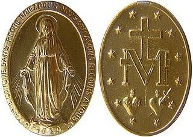
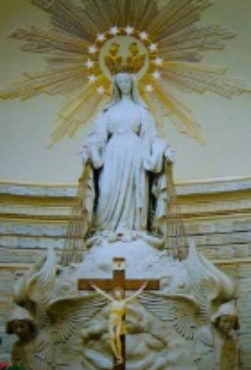
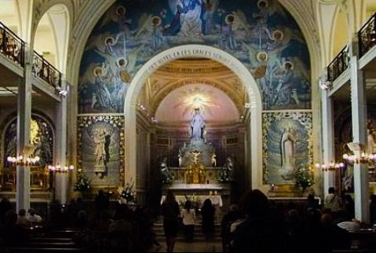
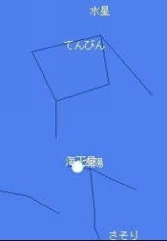
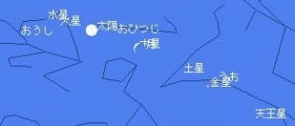
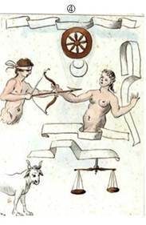
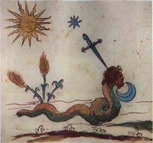
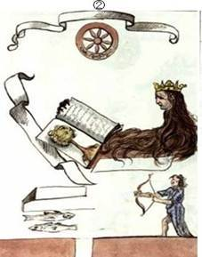
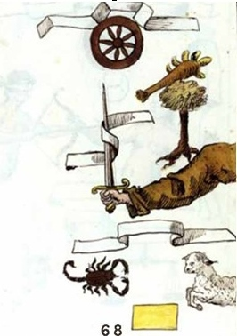
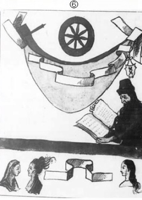

| アセンションへのハーベスト | |
| アイリーン・レークス | |
| Utopian Network (2016) | |
アセンションへのハーベスト
アイリーン・レークス著
「アセンションへのハーベスト」アイリーン・レークス著
著作権 (C) 2016 Utopian Network, All Rights Reserved.
無断複写・転載を禁じます。
２００３年から２０１３年にかけて、「ミレニアム・エラ」の主役となる、４人の四聖獣（四大天使たち）が世界４大国家にて誕生し終え、２１世紀生まれの地球人たちによって、新しい宇宙科学時代が本格的に確立されるのも近い将来のことです。
そして、２０１４年から２０１５年にかけて、ユダヤ教の祭祀と重なる皆既月食が４回連続して見られるテトラッドも起こりました。これからやって来る「ミレニアム・エラ」は、地球の歴史約４５億年の中で一番科学技術が発達し、文明の水準も最高のものです。
この電子本「アセンションへのハーベスト」は、拙著の電子本「２０２８年、大収穫期が始まる！」を改題し、大収穫期が早まって、早ければ２０１８年にも始まる大収穫期についての情報や「ノストラダムスの絵画預言」と「惑星ニビル」の情報を追加し、できるだけ多くの方々が大収穫期に向けた避難準備ができるように、そして、その後にやって来る新しい宇宙科学時代「ミレニアム・エラ」に生きるミレニアム・ヒューマンを育成するために書かれました。読者の皆さんが、この本を読まれて、これからやって来る新しい宇宙科学時代「ミレニアム・エラ」へ向かって、少しでも霊的に成長していただけたら、幸いです。
２０１６年７月吉日 アイリーン・レークス記
２０１０年から２０１２年にかけてアラブ世界で発生したアラブの春以降、世界中が「カオスの時代」すなわち、文字通りの「混沌とした時代」に突入していると言えるでしょう。
アラブの春とは、フリー百科事典ウィキペディアによると、２０１０年から２０１２年にかけてアラブ世界において発生した、前例にない大規模反政府（民主化要求）デモや抗議活動を主とした騒乱の総称です。２０１０年１２月１８日に始まったチュニジアでの暴動によるジャスミン革命から、アラブ世界に波及しました。また、現政権に対する抗議・デモ活動はその他の地域にも広がりを見せています。各国におけるデモは２０１４年に入っても続いています。そして、エジプト、シリア、イスラエル、イラク、アフガニスタン、パキスタンなど、アルカイダ系のイスラム原理主義者たちのテロ事件も多発し、内戦の危機にあります。
最近、アメリカでは、大麻を合法化する州が増加傾向にあります。アメリカは、キリスト教国家なのに、麻薬国家かつ凶悪犯罪国家となっていることが、とても残念です。また、最後の預言者クロード・ボリロン・ラエル率いるラエリアン・ムーブメントも全ドラッ グ( 麻 薬) 合法化を目指しているということで大変残念に思います。日本においても、最近、高校生などの若い青少年の間でも、大麻はタバコより安全という間違った知識の拡大によって、大麻を常用する場合が多くなっており、社会全体が注意しなければなりません。大麻は、幻覚を見せ、記憶力を悪くし、肺の呼吸器官に障害をもたらし、生殖機能も低下させるそうです。大麻常用は、他の麻薬常用への始まりになる場合が多いそうです。大麻は安全で、そのまま、生ジュースにして飲むと癌も治るのだとして、大麻を合法化している国や自治体も世界には存在しますが、果たして、本当に安全なのでしょうか？
本「チベット永遠の書」（Ｔ．イリオン著、林陽訳、徳間書店発行）の中で、テオドール・イリオンは、１９３４年７月に、チベットの密教宗団「聖白色同胞団」の地下都市を訪問した体験談を書いています。チベット第三の都市ギャンツェ郊外にあった「神秘の谷」には、古代にミトラ神教から派生したチベット密教のボン教の密教宗団「聖白色同胞団」の地下都市がありました。そこでは、多くの使用人たちが働いていたのですが、彼らの目は、虚ろでトロンとしていて、無気力、無関心で意識が朦朧としていて、力が入らない脱力感を漂わせているように見えたそうです。テオドール・イリオンも、彼らの食事を食べて、彼らと同じように、無気力、無関心で意識が朦朧とし、脱力感に陥り、身体が思うように動かなかったそうです。テオドール・イリオンは、良く考えて、彼らの食事が原因ではないかと思い、彼らの食事は一切食べず、自分の携帯した僅かの食べ物しか食べなかったら、ようやく、身体の調子が良くなり、「神秘の谷」からさっさと逃げ出して、難を逃れたそうです。
「神秘の谷」で見た人たちの症状は、明らかに、大麻に含まれる成分であるカンナビノイド系を接種した症状であり、彼らの食事に大麻などの薬草がそのまま混入されていたということですから、大麻などの薬草をそのまま、生ジュースや料理に混入させて接種しても、中毒症状が出るということでは、ないでしょうか？
昔の人たちの知恵を無駄にすることなく、麻薬合法化には、絶対断固として反対すべきです。麻薬は、身体と精神を破壊し、国をも滅ぼすだけです。麻薬の売人に騙されてはいけません。彼らは、他人を騙して麻薬中毒にし、生涯の金蔓にしようと企んでいるだけです。
世界中で、狂ったように、同性結婚合法化後、大麻合法化が施行されています。日本も間違ったこの世界的な考え方に追従して行くのでしょうか？麻薬は、人間の身体と精神を破壊し、犯罪を引き起こすだけでしかありません。麻薬中毒になってからでは、健全な日常生活を取り戻すのに、かなりの時間を要するでしょう。最初から、麻薬に手を出さないことが最上の良策です！
さらに、最近、世界中で、税金不払い、公金横領、背任、腐敗政治の横行、国民の義務の放棄、法律違反、財政破綻などで、国が機能不全に陥いったり、同性結婚、麻薬、売春を合法化する国が増加しています。また、犯罪も詐欺や殺人など凶悪化する一方です。個人によって、価値観の違いがありますが、すべての人が各自の幸福を求めています。しかし、最近は、金の亡者が多くなり、人格の向上よりも金銭欲に駆られ、手段を選ばず、富の追求こそが美徳だとされ、地球全体が堕落し、悪がはびこる混沌とした状態であると言えるでしょう。
また、２０１４年は、第一次世界大戦から１００年、日清戦争から１２０年、そして、午年（うまどし）の２０１４年でした。これだけで、パワーがはち切れた戦争の予感が漂います。
２０１４年６月２９日、ＩＳＩＳがシリア・イラク両国のＩＳＩＳ制圧地域に「イスラーム国 」を樹立すると宣言しましが、イスラーム国のスローガンとなっている、下記の太古のイスラム教スンニ派の預 言( 預言者ムハンマドの言行 録) は、新約聖書「ヨハネの黙示録」で預言されている最終戦争ハルマゲドンと似ています。
シリアの町ダビクで、８０の軍旗を掲げた背教徒の軍勢がイスラムの軍勢と終末論的な戦いを繰り広げる。イスラム教徒たちは殺りくされるが、最後には勝利し、終末の到来を告げる。
新約聖書「ヨハネの黙示録」第１６章
第六の者その鉢を大なる河ユウフラテの上に傾けたれば、河の水涸れたり。これ日の出づる方より来る王たちの途を備へん為なり。我また龍の口より、獣の口より、偽預言者の口より、蛙のごとき三つの穢れし霊の出づるを見たり。これは徴をおこなふ悪鬼の霊にして、全能の神の大なる日の戦闘のために全世界の王たちを集めんとて、その許に出でゆくなり。（見よ、われ盜人のごとく来らん、裸にて歩み羞所を見らるることなからん為に、目を覚ましてその衣を守る者は幸福なり）かの三つの霊、王たちをヘブル語にてハルマゲドンと呼ふる処に集めたり。
２０１４年６月２９日、ＩＳＩＳは同組織のアブー・バクル・アル＝バグダーディーが「カリフ」であり、あらゆる場所のイスラム教徒の指導者であるとし、イスラーム国家であるカリフ統治領をシリア・イラク両国のＩＳＩＳ制圧地域に「イスラーム国 」を樹立すると宣言しました。この代表のアブー・バクル・アル＝バグダーディーは、新約聖書「ヨハネの黙示録」の中に登場する獣の一人で、新約聖書「マルコの福音書」の中に登場する「荒らす憎むべき者」なのかも知れません。
新約聖書「マルコの福音書」第１３章１４～２０節
荒らす憎むべきものが、立ってはならぬ所に立つのを見たならば（読者よ、悟れ）、そのとき、ユダヤにいる人々は山へ逃げよ。屋上にいる者は、下におりるな。また家から物を取り出そうとして内にはいるな。畑にいる者は、上着を取りにあとへもどるな。その日には、身重の女と乳飲み子をもつ女とは、不幸である。この事が冬おこらぬように祈れ。その日には、神が万物を造られた創造の初めから現在に至るまで、かつてなく今後もないような患難が起るからである。もし主がその期間を縮めてくださらないなら、救われる者はひとりもないであろう。しかし、選ばれた選民のために、その期間を縮めてくださったのである。
イスラム過激派「イスラーム国」は、現在、約３万１千人の戦闘員を有し、世界各地から聖戦ジハードを目的に外国人戦闘員１６０００人以上が戦闘に参加しているそうです。イスラム過激派「イスラーム国」の残虐性は近年にないほど酷過ぎることは悪名高いと言えます。また、細菌兵器も製造していたそうです。更に、パキスタンの武装勢力「パキスタン・タリバン運動」（ＴＴＰ）もイスラム国に加わったことから、パキスタンの小型核爆弾がイスラム国へ流れるということも考えられます。
客観的に見て、実際に、イギリス、アメリカ、フランス、オーストラリア、中国など世界各地からシリアやイラクへ戦闘員が聖戦ジハードを目的に集結したり、ＩＳ壊滅のために、シリア、イラク、イラン、ヨルダン、サウジアラビア、トルコ、アメリカ、イギリス、フランス、オーストラリア、ロシアなどがＩＳ空爆やその他の軍事作戦に参加していることから、シリア内戦が新約聖書「ヨハネの黙示録」で預言されている「最終戦争ハルマゲドン」が現在起こっていると言えるでしょう。この最終戦争ハルマゲドンは、私たちが避けて通れない歴史的大事件だと言えるでしょう。この戦争避難民への人道的な援助が私たち一般人の責務だと思えます。
アフリカ、中東、北東アジアなど、世界には紛争地域がたくさんあります。戦争を回避するためには、紛争者同士が第三者を仲介して、話し合うことが大切です。平和的な話し合いを何度も重ねることです。
新しい第２６６代ローマ法王フランシスコは、就任ミサの挨拶で、「法王の務めは、最も貧しく弱い人たちに手を差し伸べ守ることです。政治、経済、社会の分野で責任ある立場にいる方々に、神の創造物や人々、そして、環境の保護者になるよう要請します。」などと述べ、各国要人に紛争の回避や環境保護などを呼び掛けました。
この中の「神の創造物」には、レムリア種族の巨人族、超能力人間族、狼人間族、鬼族、半獣半人族、小人族などや、吸血鬼族も、含まれていることを忘れてはいけません。１９４７年７月のロズウェル事件のはるか昔のギリシャ神話の時代から、レムリア種族たちは、存在していました。変身能力を持っていた種族の存在が、宇宙人が遺伝子工学技術を用いて地球の生物を創造した事を証明していると言えます。レムリア種族の超能力人間族、狼人間族や、吸血鬼族などの変身能力を持っていた種族には、人間とＤＮＡが違うだけでなく、彼らをそれぞれ識別するための生体ＩＤが身体に埋め込まれ、肉体と連動するプログラムが宇宙人たちの人工頭脳に組み込まれているからこそ、動物に変身したり、強い超能力を使ったり、瞬間移動したり、などが可能になっていると思われます。私たち人間は、野生動植物たちに対するのと同様に、これらのレムリア種族と棲み分けて、ある一定の個体数を保って、共生して行かなければなりません。
そして、聖書のネフィリムは、ギリシャ神話のタイタンでした。ネフィリム (Nephilim ) は、旧約聖書の「創世記」および「民数記」、旧約聖書外典（続編）の「ヨベル書」、「エノク書」などに記述された種族の名で、「巨人」の意味ですが、ギリシャ神話から由来した事は、明らかです。ギリシャ神話で、ゼウスたち兄弟姉妹と、ゼウスの父クロノスとその兄弟姉妹たち、すなわちティーター ン( タイタ ン) の一族とが戦争したティーターノマキアー（ティーターンの戦争）の事、オリンポスの神々と人間とが交わって、ギリシャ神話の英雄が誕生した事などが、聖書にも記述されていたのです。ギリシャ神話も、昔の時代の事実をある程度伝えていると思われます。宇宙人の遺伝子工学技術を用いた生命創造論がすべての謎を解決してくれるように思われます。また、参考までに、巨人族は、１３世紀まで、南北アメリカ大陸で生存していましたが、人間を捕食していたために、人間によって絶滅されたということです。現代においても、身長が２ｍ以上ある大きな身体の場合は、巨人族のＤＮＡを少しばかり受け継いでいる可能性が高いと言えます。
旧約聖書「創世記」第６章１～４節によると、「地上に人が増え始め、娘たちが生まれると、神の子らは人の娘たちが美しいのを見て、おのおの選んだ者を妻にした。こうして神の子らと人間の娘たちの間に生まれたのがネフィリムであった。彼らは大昔の名高い英雄たちであった。」といいます。
旧約聖書「民数記」第１３章３２～３３節では、カナンを偵察したイスラエルの一隊が、「そこにすむ民は巨人であり、ネフィリムである。彼らアナク人はネフィリムの出だ」とモーセに語る場面があるそうです。
旧約聖書外典「ヨベル書」第７章２１～２３節によれば、「巨人たちが人の娘をめとり、そこからネフィリムが生まれた」とされます。ネフィリムは「みな仲たがいをして共食いをし、お互いを殺しあった」といいます。
旧約聖書外典「第一エノク書」第７章では、地上に降りて人間の娘と交わった天使たち（グリゴリ）によって、巨人が生まれたといいます。
旧約聖書に、ギリシャ神話の英雄についての話が記述されている事から、ギリシャ神話の成立は、旧約聖書の成立よりも古いと言えます。すなわち、紀元前１２５０年よりも古い時代に、ギリシャ神話の英雄たちが活躍していたという事です。
ミステリー雑誌「ムー」２０１４年２月号と８月号によると、１９９０年代から、エジプト、サウジアラビア、イスラエル、シリア、イラン、イラクなどで、紀元前４５００年ぐらいの原始時代に生息していた身長３ｍ以上の巨人族の骨が続々と発見されているそうです。旧約聖書に登場するネフィリム、すなわち、古代ギリシャ神話に登場する巨人族のことです。彼らは、人間とは違う種族で、人間が宇宙人たちによって創造される前から、現実に存在していたのです！
東欧や中東などで発見されている紀元前４２００年以前の古代文明は、人間のアダムとイヴの創造以前に存在していたレムリア種族の巨人族や人狼族や三口の半獣半人族や鬼族が作ったと思われます。紀元前１８００年ぐらいから繁栄していたミタンニ王国もレムリア種族の三口の半獣半人族が支配していたようです。
ギリシャ神話で言及されるように、レムリア種族の超能力人間族のポセイドンとゼウスらが、レムリア種族の巨人族たちを迫害し、虐殺したので、平和主義のレムリア種族たちは東西南北へ逃げのび、人間族よりも一足早く古代文明を築いていたのでしょう。
白人種特有のアルビノ遺伝子を所有している人は、肌の色が白いだけではなく、体臭も大変強いようです。これは、アルビノ遺伝子がレムリア種族起源であり、自分の縄張りを築くために、体臭をマーキングしていた名残です。レムリア種族の白人種は、プレアデス星人によって科学的に創造されたので、プレアデス星人に守護されています。アダムとイヴの子孫がアルビノ遺伝子を所有していた白人種のレムリア種族と混血したために、古代エジプト文明と古代マルギアナ文明が大繁栄することとなったのだと思います。新しい人類種が誕生したのです。この時に誕生した新しい人類種が、地球の支配者階級へと繋がって行ったのでしょう。
そしてまた、中国の三大始祖の炎帝は鬼族、蚩 尤( しゆ う) は人狼族、黄帝はアダムとイヴ、ノア、ホルの子孫で、自由意志を持った人間だったようです。彼らは、それぞれの種族の支配者階級に属していました。
中国大陸には、鬼族、狼人間族、アダムとイヴの子孫の人間族、巨人族、小人族、三口の半獣半人族、変身能力を持った種族、ゾンビ、仙人、白人種のレムリア種族などが現在でも、生息しているようです。
先日、ギリシャ神話を勉強していましたが、ギリシャ神話の初期の部分は、レムリア種族の巨人族とオリンポス山の１２神を中心とした歴史ですが、実際の舞台は、ギリシャではなく、トルコだと思えます。初期の部分は、紀元前５０００年頃から紀元前３５００年頃までのレムリア種族の巨人族とオリンポス山の１２神を中心とした歴史で、英雄伝は、紀元前３８００年頃から紀元前１０００年頃までの歴史のようです。特に、レムリア種族は、巨人族と超能力人間族と狼人間族と鬼族と半獣半人族の５種族が主要になっていたようです。
レムリア種族とアトランティス種族と人間族とが並行して存在していたとも言えます。巨人族は、１３世紀頃まで南北アメリカ大陸で存在し、人間族を捕食していたと言います。巨人族は、現在では、絶滅しているようですが、他の種族は、人間族の中に隠れて、何とか生存しているようです。
ドナウ川河岸部のブルガリアのトラキア地方から、黒海沿岸部を経由して、ウラヌスたちが、最初、コンヤ近郊のチャタルホユックで村を造り、農耕や狩猟で暮らしていました。怪物に生まれた息子たちをトルコのアダナやタルソス近郊にあるタウルス山脈の洞窟に幽閉しました。
また、ゼウスらが住んでいたオリンポス山もトルコの地中海沿岸のアンタルヤ近くの町オリンポス近郊のオリンポス山だと思えます。
ギリシャ神話で、タイタ ン( 巨 人) 族のプロメテウスが人間に火を与えた話がありますが、この時の「火」は、ヤナルタシュから盗んだ火だと思われます。トルコの地中海に面したアンタルヤから、西へ８０ｋｍほど離れた郊外のオリンポスの北東に位置するタフタル山近くの標高約２５０ｍのところにヤナルタシュはあります。ヤナルタシュでは、ギリシャ神話の時代すなわち紀元前４０００年頃から、常に大地を覆う岩の隙間から火が燃え続けています。地震によりひび割れた岩から４６％水素と３４％メタンの化合したガスが発生し続けているために火が絶えることなく燃え続けているのだそうです。ヤナルタシュとは燃える石という意味のトルコ語で、英語では一般にエターナル・フレイム（不滅の炎）と呼ばれています。ヤナルタシュのような場所は、ギリシャ神話時代から燃え続けているトルコのオリンポスのヤナルタシュとトルクメニスタンの古代マルギアナ文明時代から燃え続けている天然ガスが湧き出している池の二ヶ所しか、私は知りません。６千年間以上、毎日、燃え続けている神聖な場所が、地球に存在するという事がとても驚異的です！
ところで、ノアの大洪水以前にも、古代エジプト文明が繁栄していた事がわかりました。古代原始エジプト王朝が、ノアの大洪水以前の紀元前４０００年ぐらいから始まっていたと思われます。イーオーはゼウスと別れた後、エジプトに戻り、エジプト王テーレゴノスと結婚しました。また、イーオーとゼウスの子であるエパポスは、エジプトの王となり、河神ナイルの娘メンピスとの間にリビュエーとリューシアナッサをもうけましたが、妻にちなんで名づけたエジプトのメンピスを創建しました。そして、エジプト王エパポスの娘リビュエーとポセイドンの子で、アゲーノールと双子の兄弟であるベーロス は、エジプト王となり、ナイルの娘アンキノエーを妻にし、アイギュプトスとダナオスの双子と、ケーペウスとピーネウスとの父となりました。ベーロスはアイギュプトスにアラビアを、ダナオスにリビアを与えましたが、後にアイギュプトスはメラムプース人の地を征服し、自分にちなんでアイギュプトス（エジプト）と呼びました。エジプトの王となったアイギュプトスは、アルギュピュエーとの間にリュンケウスとプローテウスをもうけました。他、多くの女性と結婚し、５０人の息子の父となりました。
しかし、その後アイギュプトスは王権をめぐってダナオスと対立しました。アルゴスへ逃げたダナオスと娘たちを追いかけて、アイギュプトスは息子たちとの政略結婚を持ち掛けましたが、リュンケウス以外の息子たちがすべて殺害されました。アイギュプトスは息子たちの死を知ると、アルゴスとダナオスを恐れ、アカイアのアロエー（パトライの旧名）に逃げ、その地で死んだそうです。
紀元前３８００年ぐらいまで、原始エジプト王朝が繁栄していた事がわかりましたが、アイギュプトス後の古代エジプトが、誰に支配されていたのかは、わかりません。ノアの大洪水以前に、レムリア種族のミュケーナイ系統の文明によって、スフィンクスが二つ、城門として、造られ、その後、アトランティス王国に侵略され、征服され、植民地となりましたが、ノアの大洪水時に発生した津波で、スフィンクスの一つが破壊されたと思われます。ノアの大洪水後、ノアの子孫が移住して来て、ピラミッドを造った古代エジプト文明が大繁栄したのです。
なお、紀元前３９００年頃から紀元前３７５０年頃まで、クレタ島をミノス王が支配していた時、鬼族のミノタウロスを将軍とする鬼族の軍隊を配下に置いて、アテナイなどの周辺諸国を植民地化していたと思われます。
また、ギリシャ神話によると、アポロンとアルテミスの双子は、雌狼から生まれました。ローマを建国した双子のロムルスとレムスは、雌狼に育てられました。ガリア戦記にも人狼の事が記述されていますが、前述の雌狼とは、人狼すなわち狼人間の事でしょう。
また、古代中国の禹王は、灌漑工事をしている時に、時々、獣に変身しながら、工事を行なっていたと言います。この獣とは、人狼すなわち狼人間の事ではないでしょうか？さらに、朝鮮半島の伝説に登場する九尾狐族も灰色狼に変身する人狼すなわち狼人間の事ではないでしょうか？古代中国や朝鮮半島の伝説にも、８８変化に変身できるレムリア種族の事も登場します。
この地球上には、人間が創造される以前の昔から、人間以外のレムリア種族がもうすでに棲息していました。「神の創造物」には、レムリア種族の巨人族、超能力人間族、狼人間族、鬼族、半獣半人族、小人族、妖精族などや、吸血鬼族も、含まれていることを、私たちは、忘れてはいけません。私たちは、自由意志を持った人間の男女アダムとイヴが創造される前から、地球上に存在するレムリア種族たちの存在を認め、自然界の動物世界と同様に、一定の個体数を維持して、レムリア種族たちと人間とが共存して行かなければなりません。紀元前５０００年頃から存在しているレムリア種族、すなわち、巨人族、超能力人間族、狼人間族、鬼族、三口の半獣半人族、小人族、ケンタウルス 族( 半人半 馬) 、サチュラス 族( 半鬼半山 羊) 、ペガサ ス( 天 馬) など、また、その後創造されたドラキュラ族を人間が迫害し、虐殺した事は、とても残念な事でした。「種の保存」の法則に従わない人間の無知ゆえの犯罪です。
レンタルＤＶＤ「テール しっぽのある美女」、「Ａ Ｒ- アー ル/ 妖精の住む島」、「エルフ物語 ～ゴス・アズールの化身～」などのファンタジー映画に必ず登場するのが、妖精や半獣半人族です。最近、アメリカの映画やテレビドラマにも、レムリア種族の巨人族、超能力人間族、狼人間族、鬼族、半獣半人族、小人族、妖精族などや、吸血鬼族を題材にした作品がたくさん登場するようになりました。この地球上には、人間が創造される以前の昔から、人間以外のレムリア種族がもうすでに棲息していたので、アメリカ制作の作品は、人間がレムリア種族の存在を認識するために大変役立っていると思います。
地球には、たくさんの種が存在しますが、「種の保存」の法則に従い、種族ごとに一定の個体数を維持する必要があります。私たち人間は、野生動植物たちに対するのと同様に、これらのレムリア種族と棲み分けて、ある一定の個体数を保って、共生して行かなければなりません。今のところ、地球で一番知性があると言われる人間が地球の自然を破壊する害獣となっている事が非常に残念です。「人間と自然との共生」について、今一度考えてみましょう。
ロシア紙コムソモリスカヤ・プラウダ（電子版）は、２０１４年４月２９日に、人類が地球外知的生命体を発見することは、人類が大きな災難に直面することを意味していると報じました。
４月中旬、地球最大の宇宙望遠鏡ケプラーが人類から４９２光年離れた場所で地球にそっくりの惑星を発見しました。大きさも形も地球と非常に良く似ており、恒星との距離から液体水の存在が保証され、自転速度も正常と判断できる「居住可能な惑星」だそうです。
これを踏まえ、記事は「今のところ、人類の地球外生命体に関するデータは乏しいが、われわれが地球外生命体の文明に触れた時は、恐らく人類最後の日となる。宇宙人にとって人類の抵抗力は不十分だからだ」と警鐘を鳴らしているそうです。
しかし、宇宙人たちは、地球人類が誕生する以前に、もうすでに、地球へ来訪しており、地球人類よりも文明が進化している宇宙人たちが、地球人類に危機をもたらすとは思えません。それよりも、未来において、進化した地球人類が他の宇宙人たちに危害を加える可能性が高いかも知れません。
まず、それ以前に、他人に危害を加えるような精神的に未熟な人類に、宇宙旅行が自由にできるような進化した科学技術が与えられるはずがありません。もし、邪悪な人類に、宇宙旅行ができるような進化した科学技術が与えられたならば、この宇宙は、滅亡するだけでしょう。
地球は、私たちの創造主たち（宇宙人たちエロイム）の「閉鎖型環境実験惑星」であり、なおかつ、「遺伝子工学実験惑星」です。宇宙人たちが、遺伝子工学技術を用いて、レムリア種族や地球人類などの地球上の生物を創造したのです。そして、地球地下のマグマの中にある私たちの創造主たちエロイムの地球地下基地７～１２箇所の大型コンピューターで、地球の自然環境や人間社会を管理し、世界中の人間が生きるためのエネルギーを人間に与えて生かし 、人間の行動も採点しているのです。
地球物語はだんだん進化して来ていますが、 紀元前１万年頃に地球の火山活動が安定化し、紀元前７０００年頃から世界各地で宇宙人たちエロイムが原住民の男女を創造しました。 紀元前６０００年頃、スイス・アルプスのライン川源流のトマーゼ湖畔で、プレアデス星人がアルビノ遺伝子を持った北欧白色人種の始祖であるレムリア人（ヨーロッパ人）の男女を創造しました。また、プレアデス星人は、巨人族、超能力人間、小人族、半獣半人族、狼人間、妖精、鬼族、人魚、半漁人なども創造しました。そして、紀元前４５００年頃には、ウラル山脈以西のヨーロッパに、 レムリア人がレムリア文明（クルガン文化）を創造しました。また、紀元前４３５０年頃、現在の南米ボリビアのティティカカ湖畔で、他の宇宙人たちが、インカ人、マヤ人、アステカ人の始祖であるアトランティス人の男女とアトランティス文明（ジム・Ａ・アレン氏の「アトランティス南米説」）を創造しました。その後、紀元前４１５０年頃、現在のトルコ（アナトリア）南東部のチグリス川源流のハザール湖畔にあった「エデンの園」で、 宇宙人たちエロイムが、アルメニア人とエジプト人とユダヤ人とアラブ人の始祖であり、自由意志を持った人間の男女（アダムとイヴ）を創造しました。アダムとイヴの子孫は、アムダリヤ川、ナイル川、チグリス川、ユーフラテス川河岸部で繁栄し、古代文明を築きました。
また、紀元前３２００年頃には、アトランティス文明が「ノアの大洪水」と同じ「水のバプテスマ」（大洪水）によって滅び、地球が水で覆われて、水で浄められました。 （紀元前３２００年頃の古代アトランティス時代に起きた「ノアの大洪水」が、地球のポールシフト（極移動）によって発生したのかは、不明。「ノアの大洪水」の時、４０日４０夜、雨が連続して降ったという「旧約聖書」の「創世記」の記述から、地球上に小惑星が衝突して、大雨が降り、大洪水が発生したと思われます。）
ディスカバリーチャンネルで放送された「聖書のミステリーを解明する 第１回：ソドムとゴモラ」を参考にすると、１８００年代にニネベの遺跡で見つかったシュメール人の古代の天文学者が紀元前７００年頃に書いた粘土板に残した円形の星座板には、ふたご座・木星などの惑星と、アピンと名づけられた正体不明の矢印が書き込まれており、この天体配置があった日の明け方の５時３０分ころに、４分半かけてアピンは地上に落下したという記述が残されています。
紀元前３１２３年６月２９日の早朝に起こった最古の隕石衝突「コフェルスインパク ト (Kofel s' Impact ) 」は、典型的なアテン群小惑星の落下の記録で、衝突予想地点には、クレーターはなく、この直径１．２５ｋｍほどの小惑星がアルプス上空のコフェルスで空中爆発し、破片が軌道を逆戻りする形で地中海一帯に帯状にばら撒かれたと 、 Reaction Engines Ltd . （反動エンジン社？）のアラン・ボンドとブリストル大学のマーク・ヘンプセルは説明しているそうです。また、オハイオ州立大学のトンプソン教授のチームが世界中から集めた氷のコアを調べてみると、約５２００年前に世界中で急激な気候変動があったことがわかりました。すなわち、アフリカ北部では緑豊かな地域が突然乾燥し、サハラ砂漠になり、チリでは熱帯地域が雪と氷に覆われ何千年も溶けずに残り、中東では肥沃な地域が砂漠に変わり文明が滅びました。
ソドムとゴモラが滅亡した時期は、アブラハムと彼の甥のロトが生きた時期によって、紀元前１９００年頃ですから、コフェルスインパクトの時期は、それよりも１千年以上昔に起こった「ノアの大洪水」や「デウカリオンの大洪水」や「ウトナピシュティムの大洪水」の時期と一致しているようです。コフェルスで起こった小惑星の空中爆発によって巻き上げられた塵や灰が地球全体を覆い、１ヶ月以上も太陽光を遮ったため、大規模な気候変動が起きたのではないでしょうか？また、コフェルス隕石が、燃えた状態で大きなまま、地中海へ落下し、大津波を発生させ、海水を大量に蒸発させて大雨をもたらす雨雲を発生させた可能性があるかも知れません。このコフェルスインパクトがギリシャや地中海沿岸部やトルコ南東部やメソポタミア地方に、津波や大雨や大洪水を発生させた可能性も高いでしょう。
一説には、ノアの大洪水とアトランティス滅亡の時期は、別物とも思われます。アトランティス滅亡は、南米で発生した巨大大地震が原因かも知れません。なお、アトランティス文明は、古代アマゾン文明であるモホス文明である可能性も高いのです。モホス文明は、紀元前８千年から紀元前１２００年まで存在していました。また、プラトンの記述では、アンデス文明がアトランティス文明のようにも思えます。また、プラトンの記述では、クレタ文明とサントリーニ島の火山噴火とをアトランティス文明に合体させているようです。
エロイムは、新しい地球物語のシナリオをもとに、実際の地球物語を現実化するために、大型宇宙船に乗って宇宙旅行をして、膨大な距離をテレポテーション（ワープ）して瞬時に移動し、時間の差を作って、遠い過去から未来へと数千年間以内で宇宙旅行をして、地球地下基地の巨大なコンピューターで強く遠隔操作を行い、地球物語のシナリオ通りに、実際の物事が事実化するように、強くコントロールしました。そして、地球物語を完全に制作した後、その情報をすべて大型宇宙船のコンピューターに伝送して、保管し、また、宇宙旅行をして、未来から過去に戻り、地球の地下基地にあるコンピューターに、大型宇宙船の中のコンピューターに保管してあった多くのデータを伝送して、その貴重な未来についての情報を未来についての示現や予言や預言として、多くの信仰深い人々や預言者たちに対して、地球物語の情報を提供したのです。
現代は、アポカリプス時代で、人類創造のすべてを理解できる時代です！１９７３年１２月１３日に、最後の預言者クロード・ボリロン・ラエルが、創造主たちエロイムの中で一番偉いヤーヴェさんと直接会ってから、彼の４０年間以上に渡る働きによって、人類の宇宙人起源説が世界中に浸透しました。彼の活動の中にもさまざまな反社会的な事柄があり、不満やるせないことも確かですが、「宇宙人が遺伝子工学技術を用いて科学的に人類を創造した」ということを世界中に流布できたことだけでも彼の伝道活動の成果があったと言えます。
参考番組
「聖書のミステリーを解明する 第１回：ソドムとゴモラ」（ディスカバリーチャンネル）
最近、世界中で拝金主義が横行し、無法地帯が増え、平和と安全がないがしろにされている傾向が強いようです...。因果応報、自業自得。各自の今の行動が、各自の来世の人生を決定するのです。今の人生を悔い改め、幸福な来世の人生を得るために、善行を行いましょう。
本来、宗教とは、我々地球人類を科学的に創造した宇宙人たちエロイムが、彼らの選んだ預言者を通して、彼らの存在と彼らの理想とする正しい人間像の基準を教えるための活動や運動のことです。
宗教は違っていても、目的は同じであり、「神の御国（天国）」と「永遠の生命」です。また、その教えは、我々地球人類の創造主たちへの信仰心を持ち、彼らの基準や御計画や指導に従うこと、自己愛から始まって、家族愛、隣人愛（他人への思いやり）を持つこと、社会が平和で幸福な世界になるように未来への明るい希望を抱いてそれを成就するように努力することの三つのことに集約されます。
地球は、私たちの創造主たち（宇宙人たちエロイム）の「閉鎖型環境実験惑星」であり、なおかつ、「遺伝子工学実験惑星」です。宇宙人たちが、遺伝子工学技術を用いて、地球人類を創造したのです。そして、地球地下のマグマの中にある私たちの創造主たちエロイムの地球地下基地７～１２箇所の大型コンピューターで、地球の自然環境や人間社会を管理し、世界中の人間が生きるためのエネルギーを人間に与えて生かし 、人間の行動も採点しているのです。と言う事は、人間の採点基準が存在していると言う事です。宇宙人たちの人工頭脳がすべての人間の行動を監視しているのです。そして、各自の今の行動が各自の来世を決定します。人間は、死ぬ時にその一生の採点数によって来世の運命がほとんど決定されます。地下基地のコンピューターによって、人間の一生の行動が採点されていますが、その点数の高い順から科学の進歩の度合いが違う世界に、死後それぞれ分類され、自動的に、地球地下基地のコンピューターから、他の惑星や地球内の他の地域社会のコンピューターに、各個人の情報が伝送され、各個人は永遠に同じ才能を持って、伝送された星々の世界に新しい肉体を持って生まれ変わるのです。因果応報で、たくさんの善行をした人は、来世の運命も良くなり、たくさんの悪行をした人は、輪廻転生の生まれ変わる事もできないでしょう。
私たち自身の行動が私たち自身の未来の運命を左右するのです。私たちは、自分自身の運命をより良く改善するために、創造主たちにお祈りをして、宇宙人たちの人工頭脳からの守護を強めましょう。そして、私たちは、人間の採点基準ルールを良く理解し、永遠の生命をめざした有意義な人生を歩むべきです。
人間の採点基準ルール
１．あなたの創造主たち、エロイムを愛せよ。あなたは、他の異なる神を拝むなかれ。
２．あなたは、あなたの創造主たちの名を、みだりに呼ぶなかれ。
３．安息日を覚えて、これを聖とせよ。
４．あなたの父母を敬え。
５．あなたは、殺すなかれ。
６．あなたは、姦淫するなかれ。
７．あなたは、盗むなかれ。
８．あなたの隣人を愛せよ。あなたの欲することを他の人にせよ。
９．あなたの光を人々の前にかかげよ。あなたの肉体は、創造主たちより与えられたものなり。
１０．あなたの肉体を大切にし、害あるものを飲食するなかれ。そして、肉体に害あるものを使うなかれ。
十戒
１．あなたには、わたしをおいてほかに神があってはならない。
２．あなたはいかなる像も造ってはならない。あなたはそれらに向かってひれ伏したり、それらに仕えたりしてはならない。
３．あなたの神、主の名をみだりに唱えてはならない。
４．安息日を心に留め、これを聖別せよ。
５．あなたの父母を敬え。
６．殺してはならない。
７．姦淫してはならない。
８．盗んではならない。
９．隣人に関して偽証してはならない。
１０．隣人の家を欲してはならない。
人類種が存続するために最も大切なことは、「地球や宇宙の中で存在する大自然を愛し、人間も大自然の一部でしかないことを自覚し、生物の食循環や輪廻転生のことを考え、地球や宇宙の大自然と人間社会との平和と調和を考えて、社会のために自分の才能を役立てること」です。
皆さんが、新しいミレニアム・ヒューマンやこれからの新しい宇宙時代や神の王国やこれからの新しい高度科学文明などをめざして霊的に成長し、「永遠の生命」をめざした自己改革を成し得ることができるように、次のことを推奨します。
１．毎日、創造主たちにお祈りをする。
２．悔い改めて、法律を守り、正しい行動をする。
３．栄養のバランスの取れた食事をする。
４．地球温暖化改善のために行動する。
５．人間と自然との共生を成し遂げる。
先日、ＮＨＫスペシャル「中国激動・"さまよえる"人民の心」を見ました。中国の歴史ドラマを見て、道教に根ざした仙人をめざした人たちが多いのかと思えば、文化革命で文化遺産の破壊や宗教弾圧が行われ、極端な拝金主義者たちが多くなっていましたが、最近は、信仰の自由が認められ、儒教やキリスト教にのめり込む人が多くなっているそうです。宗教活動によって、理想の人間像をめざした信仰生活を送ることは、とても良いことだと思います。
一方、最近のＵＦＯや宇宙人についての偽情報が多いことに驚かされます。これらの活動にも、オレオレ詐欺や投資詐欺などと同じような金目当ての金儲け主義だけの詐欺が横行していると言えるでしょう。「永遠の生命」に至る道は狭く、真実に辿り着くのは、大変難しいことだと痛感せざるを得ません。一般大衆の前に、宇宙船や宇宙人が出現することはありません。また、宇宙人が地球人社会に直接介入することはありません。
新約聖書「テサロニケ人への第二の手紙」の第２章１節～１２節に、再臨主来臨の前に出現する「不法の者」について使徒パウロが預言しています。
新約聖書「テサロニケ人への第二の手紙」第２章１節～１２節
不法の者
さて兄弟たちよ。わたしたちの主イエス・キリストの来臨と、わたしたちがみもとに集まられることとについて、あなたがたにお願いすることがある。
霊により、あるいは言葉により、あるいはわたしたちから出たという手紙によって、主の日はすでにきたとふれまわる者があっても、すぐさま心を動かされたり、あわてたりしてはいけない。
だれがどんな事をしても、それにだまされてはならない。まず背教のことが起り、不法の者、すなわち、滅びの子が現れるにちがいない。
彼は、すべて神と呼ばれたり拝まれたりするものに反抗して立ち上がり、自ら神の宮に座して、自分は神だと宣言する。
わたしがまだあなたがたの所にいた時、これらの事をくり返して言ったのを思い出さないのか。
そして、あなたがたが知っているとおり、彼が自分に定められた時になってから現れるように、いま彼を阻止しているものがある。
不法の秘密の力が、すでに働いているのである。
ただそれは、いま阻止している者が取り除かれる時までのことである。
その時になると、不法の者が現れる。この者を、主イエスは口の息をもって殺し、来臨の輝きによって滅ぼすであろう。
不法の者が来るのは、サタンの働きによるのであって、あらゆる偽りの力と、しるしと、不思議と、また、あらゆる不義の惑わしとを、滅ぶべき者どもに対して行うためである。彼らが滅びるのは、自分らの救となるべき真理に対する愛を受けいれなかった報いである。
そこで神は、彼らが偽りを信じるように、迷わす力を送り、こうして、真理を信じないで不義を喜んでいたすべての人を、さばくのである。
上記のように、自分らの救となるべき真理に対する愛を受けいれず、真理を信じないで不義を喜んでいるすべての人が、滅ぶ運命なのです。真理に目覚め、永遠の生命をめざしましょう！
ところで、皆さんは、何気なく目にした、写真、物品、地図、地名、名前、旅行した観光地などで、なんとなく懐かしさを感じたり、昔、見たことがあるような気持ちになったり、など、したことはありませんか？そういう体験は、ほとんど、私たちの潜在意識に植え付けられた「前世」の記憶から湧き上がって来る気持ちなのです。
「前世」の記憶は、私たちが新しい肉体に生まれ変わって、この世に誕生した時点で、私たち各自の頭脳の側頭葉の記憶部分の一部に、概略的な記憶が、地球地下のマグマの中にある創造主たち（宇宙人たちエロイム）の大型コンピューター基地や宇宙の他の惑星地下の大型コンピューター基地などから自動的に伝送されます。そして、日常生活で何気なく目にする、「前世」の人生に関係した写真、物品、地図、地名、名前、旅行した観光地などを通して、「前世」の記憶がよみがえって、鮮明化されて行くのです。記憶喪失の患者が、失った記憶を取り戻す時と同じです。
また、交通手段の発達した現代においては、自分の栄光ある「前世」を送った場所へ旅行して、「前世」での人生の記憶をよみがえらせ、より鮮明化し、「前世」と「現世」との人格の融合を図ることができます。「前世」と「現世」との人格の融合によって、「現世」の人格が霊的進化を遂げ、「現世」の人生を、より良いカルマ（運命）になるように強化してくれます。前世や過去世の探求をして、期待に反して、過去の罪に引きずられて、現世の人生に悪影響を及ぼす場合があります。前世や過去世の罪を浄化するために、水のバプテスマや自己浄化を行なうことが大変効果的です。
(a ) 前世とは？
現世に肉体を持って生まれる以前に生きていた過去の一生のこと。前世から現世へ、現世から来世へ輪廻転生する時に、各個人の前世からのカルマ（運命）が大変強く影響してきます。私たちが現在この地球上に存在するための多くのカルマが存在します。そのカルマとは、桜の木の根のようなものです。私たちの潜在意識の中に存在する多くの隠れた知識と教養、前世での過去の人生、そして、守護神たち（私たちを守り、観察し、導いてくれる人たち）の存在は、桜の木の根と同じです。
そしてまた、世界の初めより男は女よりも優れたものとして創造され、最初に、地球に「生」を受けた時、その時の肉体が男であった場合、「永遠の生命」を目指して霊的に進化することはそれほど難しくはありません。それとは逆に、最初に地球に「生」を受けた時、その時の肉体が女であった場合、霊的に進化することは難しく、堕落しやすいのです。「霊的な破滅」へ迷い込みやすいのは、最初に「女」として「生」を受けた人間です。
また、各個人の才能分野は、永遠に変わることがなく、前世から現世へ、そして、現世から来世へと受け継がれるのです。社会的貢献をなせるほどに、その才能を発揮できるかどうかというのは、各個人の努力によります。
(b ) 霊的進化
「最後の審判」が終了した１９７８年頃の地球社会全体では、私たちの創造主たちエロイムから科学的で知的な遺産を受け継ぐことはできませんでしたが、個人的な「最後の審判」はまだ終了しておらず、各個人がそれぞれの一生の中で創造主たちエロイムに対する信仰心、隣人愛（宇宙的兄弟愛）、そして、未来への希望の成就をどれだけ成長させたかによって、判定されます。
したがって、今の肉体を持って生活している現世は、各個人の未来を決定するための「試しの世」すなわち試験場です。この「試しの世」で、各個人が｢永遠の生命」をめざして、どれだけ努力したかによって来世がそれぞれ違ってきます。
地下基地のコンピューターによって、人間の一生の行動が採点されていますが、その点数の高い順から科学の進歩の度合いが違う世界に、死後それぞれ分類され、自動的に、地球地下基地のコンピューターから、他の惑星や地球内の他の地域社会のコンピューターに、各個人の情報が伝送され、各個人は永遠に同じ才能を持って、伝送された星々の世界に新しい肉体を持って生まれ変わるのです。その生まれ変わる世界は各個人の死ぬ直前の霊的レベルによって違ってきます。そして、一生の行動が良くなかった人たちは、破滅をして生まれ変わることができず、悪い人たちは、永遠の罰を受けることになります。その霊的レベルの違う世界は、地獄も含めて約８つの世界があります。
地獄とは、永遠の破滅と刑罰を意味します。
第１段階の世界では、平均寿命が３０年ぐらいで、病気も肉体的なものと精神的なものと両方存在し、生体エネルギーの種類はさまざまですが一般的に悪く、原始人の社会と同じ科学的にも遅れた文明でしかありません。
第２段階の世界では、平均寿命が５０年ぐらいで、病気は肉体的なものと精神的なものがあり、生体エネルギーの種類もさまざまで、地球の歴史の中では、中世や近代のような世界で、科学的にはあまり進歩しておらず、建築分野や造船業や馬車などが発達していて、暖炉や蝋燭の火を明かりとして使用していて、服飾もある程度発達している文明世界です。
第３段階の世界では、平均寿命が７０～１００年ぐらいで、病気は第１段階と第２段階の世界と同じで肉体的なものと精神的なものと両方存在していて、生体エネルギーの種類もさまざまで、地球の歴史の中では、第二次世界大戦前後の世界と１９９９年までの世界で、科学的な進歩が目覚ましく、一通りある程度まで発達していて、電気、ガス、水道、テレビ、電話、洗濯機、掃除機、自動車、電車、飛行機、電子レンジ、コンピューターなど生活を便利にする製品が一通り存在している文明世界です。
第４段階の世界では、平均寿命が１～２千年ぐらいで、病気はほとんどなく、まれに不注意なけがや精神病がみられる程度で、生体エネルギーは最も良く、その量も多いのです。地球の歴史の中では、「神の王国」時代であり、宇宙旅行が自由にできる他の宇宙文明（金星や火星などの社会）と同じであり、科学的進歩も高度であり、テレポテーションもでき、精神的レベルも高く、平和を愛し宇宙的兄弟愛に満ちた、犯罪のほとんどない世界で、社会主義体制を施行している世界です。
第５段階の世界では、平均寿命が１万年ぐらいで、病気や生体エネルギーについては、第４段階の世界と全く同じで、第１段階から第３段階までの世界に住む人々の守護神となれるような人々が住んでいる世界です。宇宙社会や古代ムー大陸人やアトランティス人の住む地下都市の社会であり、科学的進歩がほとんど完全に近い文明社会です。なお、宇宙社会では、時間のコントロールもできます。
第６段階の世界では、平均寿命が１０万年ぐらいで、病気や生体エネルギーについては、第５段階の世界と全く同じで、第１段階から第４段階までの世界に住む人々の守護神となれるような人々が住んでいる世界です。科学的にも発達していて、人間やその他の生物を科学的に、化学物質のみから創造でき、物質の縮小・拡大もできる文明社会です。
第７段階の世界では、平均寿命が１０万年以上で「永遠の生命」をも持つ人もいる世界であり、病気や生体エネルギーについては第６段階と同じであり、科学的に最も発達していて、他の惑星に生命を創造し、その惑星の歴史を作ったり、一つの「宇宙」を科学的に創造し、その宇宙の歴史を作ったりできる、科学的に最も発達した世界であり、その科学力を用いてできないことはないような不思議な世界であり、私たちの創造主たちエロイムの住むような文明社会です。
それぞれの世界において、科学技術の進歩と文明のレベルと人間の寿命がかなり違ってきます。
さて、「瞑想検索」、すなわち、「時間にして、１回３０分～１時間ぐらい、瞑想をしながら、心を無にして、宇宙情報を探ってみるという方法」で、自分の「前世」の情報を探ってみましょう。「前世で、自分はどういうことをしていたのか？」と強く考えて探っている時に、前頭葉の頭脳内部モニタースクリーンに自然に浮かんで来た情報は、ほぼ、「前世」に関係した情報です。そして、その「前世」の情報を参考に、自分の才能は何なのかも探りましょう。私たちが、創造主たちエロイムの住む第７段階の世界すなわち｢永遠の生命」を得ることはとても難しいですが、自分の「前世」や「才能」を知り、社会のためにその才能を役立て、一段階ずつ霊的レベルの高い世界を上って進化していきましょう。
私たちは、創造主たちエロイムの住む第７段階の世界すなわち｢永遠の生命」、言い換えれば、「不死権」を持つ人々の住む世界をめざして、現在の人生を信仰深く、正しい行いをして、精一杯生きるべきなのです。「永遠の生命」を得ることはとても難しく、険しい階段を一歩一歩上っていかなければなりません。一足跳びでは「永遠の生命」を得ることはできません。一段階ずつ霊的レベルの高い世界を上っていき、進化していきましょう。
最近、世界各地で宗教間の対立と抗争が激化しています。これではいけません。宗教は、暴力や抗争を行なうために存在するのではありません！
宗教とは、本来、私たち地球人類を科学的に創造した宇宙人たちエロイムが、彼らの選んだ預言者を通して、彼らの存在と彼らの理想とする正しい人間像の基準を教えるための活動や運動のことです。私たちの創造主たちは、世界各地の地域ごとに人々が彼らについて良く理解できるようにその地域から預言者を一人選んで、彼らの教えを広められました。
したがって、宗教は違っていても、目的は同じであり、「神の御国（天国）」と「永遠の生命」です。また、その教えは、私たち地球人類の創造主たちへの信仰心を持ち、彼らの基準や御計画や指導に従うこと、自己愛から始まって、家族愛、隣人愛（他人への思いやり）を持つこと、社会が平和で幸福な世界になるように未来への明るい希望を抱いてそれを成就するように努力することの三つのことに集約されます。
平和で幸福な世界を築くために、私たちは、まず第一に、栄養のバランスの取れた食事をし、毎日適度な運動をして健康な肉体を維持することを心がけなければなりません。次に、私たちは、いつも陽転思考を心がけ、明るく振る舞い、明るくて良い丁寧な言葉使いをし、正しい結果を得られるように正しい行動を取り、各自の才能を社会のために役立てなければなりません。
私たちは今、最終目的の「永遠の生命」をめざして、地球上で「試しの一生」を送っているのであり、今の地球上で各自がどれだけ社会を明るく幸福で平和なものにするために貢献したかどうか、また、各自が、私たちの創造主たちの教えに従った正しい行動を取っているかどうか、など、各自の試しの一生は、私たちの創造主たちのコンピューターによって彼らの一定の基準の下で採点されており、その採点数によって、死んだ後、どの段階の文明レベルの世界へ生まれ変わるかどうかが決定されるのです。寿命１千年以上の長い寿命を持ち、科学技術も宇宙旅行が自由自在にできる、もっと進んだ高度科学文明社会に生まれ変わりたいと思うならば、私たちの創造主たちの教えに従った正しい行動を取らなければならないのです。
ところで、日常生活に芸術作品が溶け込んでいる中で生活していると、私たち自身も精神的にリラックスでき、美しい芸術作品を見ていることによって、満足感が湧き上がってきて、良いエネルギーを得ることができます。
例えば、心の中に安らぎを与えてくれるような印象派の絵画や、色彩豊かで、心の中を暖かくしてくれるような抽象画や、心の中をリラックスさせてくれたり、エネルギッシュで活動的にしてくれるような音楽などを鑑賞できるような、変化に富んだ、芸術作品のある日常生活、そして、芸術性に富んだ部屋のインテリア、芸術性のある食事など、心の中に、快さ、楽しさ、喜び、新鮮さ、気品、知性、理性、安らぎ、やさしさ、愛情、満足感などの良い感情や気持ちをもたらしたり、引き出したりできる芸術作品を自分の日常生活の中の身近なところに置くことによって、私たちの日常生活は、どんどん明るくなり、人間関係もスムーズに楽しくなり、陽転思考のできる、楽しい幸福なものとなっていきます。
私も自分の部屋の中に、絵画などの芸術作品を多く飾るようにしていますが、これは、部屋の中にバーチャルリアリティー（仮想現実）の世界を創造し、空間を広げてくれます。また、さらには、自分の視覚を通して、頭脳の中をリラックスさせてくれます。
私は、最近気づいたのですが、線や曲線や立体画像や色彩などの構図自体が、頭脳のシナプスを刺激し、脳細胞を活性化してくれるのです。
このことは、人間の視覚だけではなく、聴覚、触覚、臭覚などの感覚器官も、満足感や幸福感が感じられるように適度に刺激すべきであることに気づかせてくれます。良い音楽や良い手触りや良い香りが、私たちの頭脳のシナプスを刺激して、脳細胞をより良く活性化してくれるのです。
また、お花見やキャンプやピクニックなどの季節感の溢れる行事やお祭りに参加し、楽しむことによって、脳神経（シナプス）を刺激し、脳神経の働きをよくして、記憶力もよくなり、精神衛生にもよく、健康な肉体も維持することができます。（＊暴飲暴食は健康に害を及ぼすだけ。）そこで、カレンダーとにらめっこして、季節ごとの行事を楽しみましょう！
このように、季節感のある、色彩豊かな、私たちの五感を刺激する、メリハリのある変化に富んだ毎日を有意義に送ることによって、私たちは宇宙的で広く豊かな宇宙的精神を養うことができます。
最近、大ヒット映画「クリムゾン・リバー」のジャン＝クリストフ・グランジェ原作ベストセラー小説「ミゼレーレ」を実写化した「クリムゾン・プロジェクト」をＤＶＤで見てから、「ミゼレーレ」の歌に魅了されてしまい、少年合唱団や聖歌隊の歌を良く聴くようになりました。 彼らの清らかで澄み切ったソプラノの歌声を聴いていると、自分の心が清められ、神聖化されるように思えます。そして、より神聖で信仰深い生活が送れそうです。
ギリシャ神話にセイレーンの歌声が出て来ます。セイレーンは、ギリシャ神話に登場する海の怪物で、上半身が人間の女性で、下半身が鳥の姿をしているとされ、海の航路上の岩礁から美しい歌声で航行中の人を惑わし、遭難や難破に遭わせたそうです。歌声に魅惑されて殺された船人たちの死体は、島に山をなしたといいます 。 (Wikipedi a よ り )
映画「オデュッセウス」「オーストラリア」「クリムゾン・プロジェクト」の中で、セイレーンの歌声が登場します。実際には、セイレーンの歌声ではありませんが、少年の澄み切ったソプラノの甲高い歌声が人間や動物の頭脳に影響を与える場合があるようです。私の遥かなる遠い前世において、遠くからセイレーンの歌声を聞いたことがあるように思えます。現代の歌手サラ・ブライトマンの歌声のように、美しく澄み切ったソプラノの声に似ていて、その歌声を聞いていると身動きができないのです。一種の超能力とも言えるでしょう。
ミゼレーレ（ 羅 : Miserer e ）、または『ミゼレーレ・メイ、デウス』（ 羅 : Miserere mei, Deu s 、 日: 神よ、我を憐れみたまえ）は、イタリアの作曲家であるグレゴリオ・アレグリによって１６３０年代に作曲されたと推定されます。システィーナ礼拝堂にて、聖週間の水曜日から金曜日にかけて行われる朝課（英語版）のなかでも特別な礼拝である「暗闇の朝課（英語版）」に際して用いられました。「暗闇の朝課」の儀式は通常午前３時ころから始まり、蝋燭の灯りを一本ずつ消してゆき、最後の一本が消されるまで続きます。アレグリは、「暗闇の朝課」の最初の読唱の終わりに演奏されることを念頭に作曲しました 。 (Wikipedi a よ り )
セイレーンの歌声のように、美しい聖歌やモーツァルト作曲の音楽などを聞いて、美しく神聖な心を養いましょう。
さらに、私たちは、自分自身の運命をより良く改善するために、創造主たちにお祈りをして、宇宙人たちの人工頭脳からの守護を強めましょう。また、静かで神聖な場所で、神聖な気持ちを抱いて、精神を集中して、創造主たちにお祈りしましょう。
地球は、私たちの創造主たち（宇宙人たちエロイム）の「閉鎖型環境実験惑星」であり、なおかつ、「遺伝子工学実験惑星」です。宇宙人たちが、遺伝子工学技術を用いて、地球人類を創造したのです。そして、地球地下のマグマの中にある私たちの創造主たちエロイムの地球地下基地７～１２箇所の大型コンピューターで、地球の自然環境や人間社会を管理し、世界中の人間が生きるためのエネルギーを人間に与えて生かし 、人間の行動も採点しているのです。人間は、死ぬ時にその一生の採点数によって来世の運命がほとんど決定されます。因果応報で、たくさんの善行をした人は、来世の運命も良くなり、たくさんの悪行をした人は、輪廻転生の生まれ変わる事もできないでしょう。私たち自身の行動が私たち自身の未来の運命を左右するのです。
｢お祈り」とは、私たちの創造主たちエロイムと私たちとをつなぐ最も重要な連絡手段です。お祈りによって、私たちの感謝、考え、意見、願いが私たちの創造主たちエロイムに伝わります。また、お祈りによって、各自の問題点を私たちの創造主たちエロイムに相談することもできます。何度もお祈りすることによって、私たちの創造主たちエロイムや彼らの御使いたち（人間ロボット、この地球で７６００年ぐらい生きている古代レムリア人、５２００年ぐらい生きているアトランティス人、小人族、他の惑星の宇宙人など）からアドバイス（忠告）や注意や助けをテレパシーや画像によって与えられます。時には、期待した方法で答えてくれないかも知れません。が、彼らは私たちの未来をほとんどご存じですから、彼らの答えを参考にして自分の自由意志によって正しい行いを選択しなければなりません。また、創造主たちにお祈りをして、宇宙人たちの人工頭脳からの守護を強めることができます。
お祈りをするときは必ず、次のような順番で行った方が良いでしょう。
１．呼びかけ（愛する私たちの創造主たちエロイム様）
２．感謝
３．意見、心の中に思っていること、お願い
４．締めくくり（創造主たちエロイムに、尊敬と感謝をこめてお祈りします。アーメン。）
さて、前世や過去世の探求をして、期待に反して、過去の罪に引きずられて、現世の人生に悪影響を及ぼす場合があります。前世や過去世の罪を浄化するために、水のバプテスマや自己浄化を行なうことが大変効果的です。
神聖な気持ちを抱き、一瞬ですが、頭を含めた全身を水の中に沈めて、身を清めるのです。そして、「私たちの救世主イエス・キリスト様、天界の女王ミトラ様、私たちの創造主たちエロイム様、どうぞ、私の罪を清めてください。そして、永遠の生命をめざした信仰生活を歩み、社会のために役立つよう、守り導いてください。主らに尊敬を込めて感謝し、お願いして、お祈りいたします。アーメン。」
水のバプテスマや自己浄化を行なった後は、毎日、朝と夜の２回以上、私たちの運命に影響を与える権能を持っている「私たちの救世主イエス・キリスト様、天界の女王ミトラ様、私たちの創造主たちエロイム様」に祈りを捧げましょう。創造主たちにお祈りをすることによって、自分自身の運命をより良く改善し、宇宙人たちの人工頭脳からの守護を強めることができます。
主の祈り
天にいますわれらの父よ、御名（みな）があがめられますように。
御国（みくに）がきますように。
みこころが天に行われるとおり、地にも行われますように。
わたしたちの日ごとの食物を、きょうもお与えください。
わたしたちに負債のある者をゆるしましたように、わたしたちの負債をもおゆるしください。
わたしたちを試みに会わせないで、悪（あ）しき者からお救いください。
お祈りの言葉は、その時々の事柄に相応したものでなければいけません。いつも同じ言葉を使ったお祈りでは、創造主たちエロイムがきちんと聞いてはくれません。お祈りは、少なくとも朝と夜の２回以上は、行いましょう。また、毎日の３度の食事の前にも、創造主たちエロイムに食事への感謝の祈りを捧げましょう。最初は、お祈りするのがとても恥ずかしく、おっくうかもしれません。でも、お祈りをする習慣を身につけることが大切です。毎日、お祈りを続けましょう。
世界中のすべての人間の行動が人工頭脳で監視され、一定の法律の下に平等に採点され、徹底的に人工頭脳で管理された、不正のない「コンピューター管理社会」を実現し、世界が平和で幸福な千年王国、すなわち、持続可能な自然循環型社会「アルカーサ」を築くために、自分の才能を役立てましょう。そして、人間と自然とが共生した新しい宇宙科学時代の高度で知的な文化水準を謳歌しましょう。
１９４７年７月２日の夜、アメリカのニューメキシコ州のホース・スプリングスの約２４０キロあまり東北東の上空を推定時速８００キロで東から北西に向かって編隊飛行をしていた２機のＵＦＯが落雷に撃たれて衝突し、１機は大破してニューメキシコ州コロナ近郊に破片となって降り注ぎ、もう１機はコントロールを失ってホース・スプリングス近郊のサン・オーガスティン平原まで飛び続けて不時着し、２機のＵＦＯの残骸や宇宙人の死体や生きた宇宙人が、米空軍によって回収されたロズウェル事件から、早くも７０年間が過ぎ去ろうとしています。
このロズウェル事件が発端となって、本格的なＵＦＯ研究が始まり、後に、「ＭＪ１２（マジェスティック・トゥエルブ）」と呼ばれる１２人からなる国家最高機密委員会とネバダ州にある宇宙人の秘密研究施設「エリア５１」が、設置されることになったのです。
１９４７年７月のロズウェル事件の宇宙人たちが地球に来た最大の目的は、アメリカのコロラド大高原（プレート）の地下に、地球人と宇宙人とが一緒に、新約聖書の「ヨハネの黙示録」の中で預言されている、天界の女王「マイトレーヤ 」( 弥勒、 風) と、四聖獣たちの「獅子」（白虎、火）、「若き牡牛」（玄武、土）、「人のような顔」（青龍、水）、「空を飛ぶ鷲」（朱雀、空、気）の４人の政治指導者たちを、観察し、守護するための人工頭脳を有する宇宙人基地「エリア５１」を建造することでした。彼らは、新約聖書の「ヨハネの黙示録」の預言を成就させるために、地球へやって来ました。エリア５１の宇宙人基地には、宇宙人たちの人工頭 脳( スーパーコンピュー タ) が設置され、新約聖書の「ヨハネの黙示録」に登場する天界の女 王( マイトレーヤ、ミトラ、弥 勒) 、四聖獣の獅子、若き牡牛、人のような顔、空を飛ぶ鷲の肉体と連動するプログラムを宇宙人たちの人工頭脳に組み込み、ミレニアム・エラに生きる彼らの権力を絶対的なものとし、彼らの誕生から死までの一生を宇宙人と地球人の両方で監視し、彼らの安全を見守ることとなったのです。それというのも、彼らの存在なくしては、地球の未来が存在しないからです。
そして、地球人と宇宙人は、秘密の宇宙人基地において、５０年間ほどずっと一緒に、「マイトレーヤ」を観察し続けているのです。（これが、「プロジェクト３６」と言われているようです。）また、２００３年～２０１３年に、四聖獣たちも全員誕生し終え、彼らの成長と共に、地球が宇宙科学文明社会へとだんだん近づいています。
マイトレーヤプロジェクトは、１９４５年から２０４５年までの１００年間で実施されています。
１９４５年８月に、広島と長崎において、人類初の原子爆弾投下による被害。本格的なマイトレーヤプロジェクトの始まり。
１９４６年９月、クロード・ボリロンが、フランスのヴィシーで誕生。
１９４７年７月、ロズウェル事件。
１９４８年３月、エリア５１の建設開始。
１９５０年４月３０日、ネリス空軍基地運用開始。
１９５５年７月？、エリア５１の宇宙人基地の人工知能を含む施設の運用開始。新約聖書「ヨハネの黙示録」の時代が本格的に始まる。天の女王と四聖獣たちとその部下たちが、新しい宇宙科学時代の主役だ！
１９５７年、生き神マイトレーヤ受胎、誕生。
１９７３年１２月、クロード・ボリロンが、宇宙人たちエロイムの中で一番偉いヤーヴェさんと初めてコンタクトする。
１９７５年１０月、クロード・ボリロンが、宇宙人たちエロイムの中で一番偉いヤーヴェさんと二度目のコンタクトをする。
１９７８年１１月に、「最後の審判」終了の人工テレパシーによって、生き神であるマイトレー ヤ( 弥 勒) が一度目の死を経験し、すべての地球人類が一度死に、第一の復活に預かる。
２０１１年３月に、東日本大震災での大津波と福島原発事故による被害。
そしてまた、当初の四天王プロジェクトは、２０００年から２１００年までの１００年間で実施されています。
２０００年、四聖獣たちが主役の本格的な四天王プロジェクトが始まる。
２００３年から２０１３年までに、四天王すなわち四聖獣の獅子、若き牡牛、人のような顔、空を飛ぶ鷲がその順番は少し預言とは違うが、世界各地で誕生する。
２０１３年、クロード・ボリロン・ラエルが、ヤーヴェさんと最初にコンタクトしてから、４０年になる。
２０１５年、クロード・ボリロン・ラエルが、ヤーヴェさんと２回目にコンタクトしてから、４０年になる。
２０１８年、最後の審判終了の懲罰が科されてから、４０年になる。
２０２３年、クロード・ボリロン・ラエルが、ヤーヴェさんと最初にコンタクトしてから、５０年になる。
２０２５年、クロード・ボリロン・ラエルが、ヤーヴェさんと２回目にコンタクトしてから、５０年になる。２０２５年までに、地球温暖化を改善できなければ、２０２８年から大収穫期が始まる！
現代は、アポカリプス時代で、人類創造のすべてを理解できる時代です！最後の預言者クロード・ボリロン・ラエルの４０年間にわたる働きによって、人類の宇宙人起源説が世界中に浸透しました。彼は、「宇宙人たちが地球上の人間を、彼らの遺伝子工学技術を用いて科学的に創造した。」というメッセージを世界中に広めるために、宇宙人たちエロイムたちから遣わされた最後の預言者です。２０２５年までに、地球温暖化を改善できなければ、２０２８年から大収穫期が始まることは確実です。
２０２８年、最後の審判終了の懲罰が科されてから、５０年になる。
２０２８年に、大収穫期が始まり、地球の所有者であり、生き神であるマイトレー ヤ( 弥 勒) が１９７８年以来、二度目の死を経験し、地球上の人間たちのほとんどが死ぬことになるだろう。
この時に、四聖獣たちとその部下２４人を含む１５万人、又は、１５億人ぐらいが選ばれて生き残るだろう。そして、四聖獣たちとその部下２４人を中心とする宇宙科学文明時代が始まるだろう。
２０２８年に、地球で大収穫期が始まり、地球の所有者であり、生き神であるマイトレー ヤ( 弥 勒) が１９７８年以来、二度目の死を経験し、地球上の人間たちのほとんどが死ぬことになるでしょう。この時に、四聖獣たちとその部下２４人を含む１５万人、又は、１５億人ぐらいが選ばれて生き残り、四聖獣たちとその部下２４人を中心とする宇宙科学文明時代が始まるでしょう。そして、地球上に、地球温暖化を改善し、自然とレムリア種族と人間とが共生した持続可能な自然循環型社会「アルカーサ」が、建設されることになるでしょう。
２０３０年、救世主イエス・キリストが復活してから２０００年後にあたり、四聖獣の獅子ちゃんが２７才の時に、創造主たちエロイムの中で一番偉いヤーヴェさんと直接会い、宇宙人たちの政治体制などの宇宙政治学を教授され、アメリカ大統領をめざすことになるだろう。
２０３３年、四聖獣たち全員が満２０才以上になり、彼ら全員が政治家をめざすことになるだろう。
２０４３年、四聖獣たち全員が満３０才以上で、政治家として、活躍しているだろう。
２０４５年、四聖獣たちとその部下２４人を中心とする宇宙科学文明時代が始まっており、地球上で地球温暖化も改善され、自然とレムリア種族と人間とが共生した持続可能な自然循環型社会「アルカーサ」が確立され、宇宙人たちとも交流できる時代となっていることだろう。
地球は、私たちの創造主たち（宇宙人たちエロイム）の「閉鎖型環境実験惑星」であり、なおかつ、「遺伝子工学実験惑星」です。世界中のすべての人間の行動が人工頭脳で監視され、一定の法律の下に平等に採点され、徹底的に人工頭脳で管理された、不正のない「コンピューター管理社会」を実現し、世界が平和で幸福な千年王国、すなわち、持続可能な自然循環型社会「アルカーサ」を築くために、自分の才能を役立てましょう。そして、人間と自然とが共生した新しい宇宙科学時代の高度で知的な文化水準を謳歌しましょう。
新約聖書の「ヨハネの黙示録」の中に記載されている預言が成就される時代であるアポカリプ ス( 黙示 録) 時代が、１９４５年８月の広島と長崎への原爆投下から始まったと言われています。このアポカリプス時代に、救世主イエス・キリストの生まれ変わりである再臨主が誕生しています。
マイトレーヤは、ミトラ教の「ミトラ」と同じ意味です。聖母マリア（天の女王）の生まれ変わりであるマイトレーヤ（ミトラ、弥勒、生ける神の印 、天界の女王）は、洗礼者ヨハネの生まれ変わりである最後の預言者クロード・ボリロン・ラエルの誕生から約１０年後に、この地球上で誕生しましたが、最近、その権能によって救世主イエス・キリストの生まれ変わりであることが判明しました。イエス・キリストが「聖書」で約束されたダビデの印のベツレヘムの町で生まれたように、マイトレーヤは、地球の東方、日本のダビデの星の印の町で生まれました。また、マイトレーヤは、レムリア種族の支配者階級のＤＮＡであるアルビノ遺伝子を保持し、イエスの正当な子孫の印として、背中の左の肩甲骨のそば、すなわち、心臓の裏近辺に直径５ｍｍぐらいの円形の青紫色のあざがあります。さらに、マイトレーヤは、「旧約聖書」の中に登場するアダムの子孫ノアの息子セムの５番目の息子アラムの息子ホルの子孫です。アダムの子孫であるノアの息子セムの５番目の息子アラムの息子である「ホル」は、創造主たちから「永遠の栄光」を与えられており、「地平線の太陽、栄光、光、神聖、神、鷹の意味」を持った名前で、「太陽信仰」の象徴でした。そしてまた、マイトレー ヤ( ミトラ、弥 勒) は、人狼族の支配者階級の子孫でもあり、人狼族の間でもその出現が予言され、人狼族と人間族との共生社会を成し遂げるとされています。また、マイトレーヤは、吸血鬼族になったイスカリオテのユダの子孫でもあります。そして、名前もイエスのように、我々の創造主たちから祝福された名前を与えられており、 マイトレーヤの名前自体が「ミトラ」を意味し、マイトレーヤの色はミトラや聖母マリアと同じ青色で、マイトレーヤの運命数も「３６（弥勒） 」を意味するため、知恵のある者は、マイトレーヤのことを認知することができるでしょう。
フランス、パリにある「奇跡のメダイ教会」は、世界中で、「天界の女王マリア様」を崇拝する唯一の教会であると言えます。
下記の記述は 、 Wikipedi a から引用。
不思議のメダイは、聖母のメダイとも呼ばれ、１８３０年にフランスの修道女カトリーヌ・ラブレのもとに聖母マリアが現れて製作を依頼したと伝えられている。ラブレが見たマリアは、様々な色の指輪をはめて地球の上に立ち、その指輪の多くが地球に光を注ぎ、「原罪無くして宿り給いし聖マリア、御身に寄り頼み奉る我らのために祈りたまえ」というフレーズの入った楕円形の枠の中に浮かび上がっていた。そして枠が回転したかのように今度 は 1 2 の星の輪と、十字架が乗った大き なM という字、その下にイエス・キリストの心臓（聖心）とマリアの心臓が見えたという。ラブレは『その姿をモチーフにしたメダイを作って身に着けると多大な恵みがある』とマリアに告げられ、その後２年間調査を行ったラブレの聴罪司祭と大司教を通してメダイ製作の許可が下りた。このメダイを着けた人間が多くの祝福を受けたというので「不思議のメダイ」と呼ばれ、世界中に広まった。更に、聖マリアは、聖ヨハネの黙示録の「一人の女が身に太陽をまとい、月を足の下にし、頭には十二の星の冠をかぶっていた」（聖ヨハネの黙示録 １２・１）の女を意味し、私たちが彼女を祝福し、「原罪なくして宿り給いし聖マリア、御身に依り頼み奉る我等の為に祈り給え。」と祈るように教えている 。( 不思議のメダイ - 聖母マリアへの９日間の祈り - 聖母の騎士社刊よ り )



上記の新約聖書ヨハネの黙示録の中の女は、明らかに、アポカリプス時代に出現する「天界の女王」のことであり、聖母マリアと救世主イエス・キリストの生まれ変わりで、「生きる神の印、ミトラ、マイトレーヤ、弥勒」と同一です。カトリック教会やバチカンの崇拝しているマリアとは、「天界の女王」と同一であると、明白に結論付られます。また、不思議のメダイの裏の構図を見ると、イエス様の心臓は、イバラに包まれ、天界の女王マリアの心臓は長い剣で刺し貫かれています。これは、将来、天界の女王マリアが長い剣で心臓を刺されて暗殺されるということを暗示しているのではないでしょうか？
１９４７年７月のロズウェル事件の宇宙人たちは、新約聖書の「ヨハネの黙示録」の預言を成就し、アメリカにエリア５１の宇宙人基地を建設させるために、地球へやって来ました。エリア５１の宇宙人基地には、宇宙人たちの人工頭 脳( スーパーコンピュー タ) が設置され、新約聖書の「ヨハネの黙示録」に登場する天界の女 王( マイトレーヤ、ミトラ、弥 勒) 、四聖獣の獅子、若き牡牛、人のような顔、空を飛ぶ鷲の肉体と連動するプログラムを宇宙人たちの人工頭脳に組み込み、ミレニアム・エラに生きる彼らの権力を絶対的なものとし、彼らの誕生から死までの一生を宇宙人と地球人の両方で監視し、彼らの安全を見守ることとなったのです。それというのも、彼らの存在なくしては、地球の未来が存在しないからです。テレビドラマ「ユーリカ」の中で取り上げられたように、左耳のすぐ後ろの首に、感情や思考を監視するための極小装置が埋め込まれ、外見上、小さなホクロに見えます。また、彼らには、彼らを識別するための生体ＩＤが身体に埋め込まれていて、地球上空に張り巡らされた宇宙人たちの人工衛星によって、彼らが現在どこにいるのかが、正確に把握されているのです。
また、中世にフランスで生きたノストラダム ス (Nostradamus, Michel 1503-66 ) の預言にも、「１９９９年８月１１日の皆既日食に、前世の記憶をよみがえらせて復活する東方の大王」として「ミトラ（マイトレーヤ）」が出現しています。
１９９９の年７の月
空から恐怖の大王が降りて来る
そしてアンゴルモアの大王も降り
その前後、火星が幸福な時を支配する
「太陽暦で１９９９年８月１１日の皆既日食に、宇宙連合から地球へ、地球の運命を左右できる大使が派遣される。そして、東方の大王（ミトラ、マイトレーヤ、赤龍）もよみがえる。その前後、火星人が地球を管理する。」
さらに、新約聖書の「ヨハネの黙示録」の中の第７章と第１２章の記述にも、マイトレーヤ（ミトラ、弥勒）を「生ける神の印」と「一人の女」として、マイトレーヤ（ミトラ、弥勒）の出現が預言されています。
新約聖書「ヨハネの黙示録」第７章１～４節
この後、わたしは四人の御使（みつかい）が地の四すみに立っているのを見た。彼らは地の四方の風をひき止めて、地にも海にもすべての木にも、吹きつけないようにしていた。
また、もうひとりの御使が、生ける神の印を持って、日の出る方から上って来るのを見た。彼は地と海とをそこなう権威を授かっている四人の御使にむかって、大声で叫んで言った、
「わたしたちの神の僕（しもべ）らの額に、わたしたちが印をおしてしまうまでは、地と海と木とをそこなってはならない。」
わたしは印をおされた者の数を聞いたが、イスラエルの子らのすべての部族のうち、印をおされた者は十四万四千人であった。
これは、アポカリプス（黙示録）時代における４人の預言者の出現と、世界の東の地方から「神」の印を持った救世主の出現と、創造主たちエロイムが大型コンピューターを利用して世界中から１４万４千人を選ぶということが預言されています。創造主たちエロイムは、彼らが選出した人間たちに直接避難勧告を出すつもりだと、私に話しています。
また、新約聖書の「ヨハネの黙示録」の中の第１２章の「女と龍」の記述にも、マイトレーヤ（ミトラ、弥勒）の出現が預言されています。
新約聖書「ヨハネの黙示録」第１２章１節
また、天に大きなしるしが現れた。一人の女が身に太陽をまとい、月を足の下にし、頭には十二の星の冠をかぶっていた。
ミトラは、太陽神であり、十二星座に囲まれていることから、新約聖書の「ヨハネの黙示録」の中の第１２章の「女と龍」の女とは、マイトレーヤ（ミトラ、弥勒）であると断定できます。
さらに、新約聖書の「ヨハネの黙示録」は、次のモルモン経「ニーファイ第一書」第十四章１９～２７節に記述されているように、紀元前６００年頃に、ニーファイが天使によって黙示者ヨハネの姿と新約聖書「ヨハネの黙示録」と同じ終末の世の出来事を示現で見せられていることから、紀元前６００年頃、もうすでに、新約聖書「ヨハネの黙示録」に記述されている地球の終末の状況が決定されていたと推測できます。すなわち、古代ローマ帝国において、初期キリスト教とミトラ教を含む他の宗教とが合体され、古代ローマ帝国の国教としての新しいキリスト教の誕生が紀元前６００年頃にすでに決定されていたのです。そこには、不動の運命を背負った「地球の終末の歴史」がもうすでに存在していると言わざるを得ません。
モルモン経「ニーファイ第一書」第十四章１９～２７節
（紀元前６００年頃に、ニーファイが天使によって示現で見せられた黙示者ヨハネの姿と新約聖書「ヨハネの黙示録」と同じ終末の世の出来事。）
私がながめると白い衣を着ている一人の男が見えた。天使が仰せになるのに「見よ、これは子羊の十二使徒の一人である 。 -- - またこの世の終りについても書き記す。それであるから、この者が親しく見て書き記すところは正しくて真実である。また見よ、この者の書き記すところは汝がユダヤ人から出るのを見た書物の中にある 。 -- - 見よ、この子羊の使徒の書くべきことは汝がすでに見た多くのことであるが、なおそのほかのことをこれから汝は見るであろう。しかし、今後汝の見ることはこれを書いてはならない。それは主なる神がすでにあの神の子羊の使徒にそれらのことを書くように聖任したもうたからである 。 -- - 私ニーファイは、天使の言葉によってこの子羊の使徒の名はヨハネであると言うことを聞いてここに証をする。
モルモン経「ニーファイ第二書」第三章１２節
（古代エジプトへ売られたヤコブの息子のヨセフがその子孫に与えた預言。）
それ故に、汝の子孫は記録を書き、またユダの子孫も記録を書くべし。しかして、汝の子孫の書き誌す書と、ユダの子孫の書き誌す書とは、相合して偽りの教えをうち破り、争論を鎮め、汝の子孫の中に平和を起し、また末日に於て汝の子孫にその先祖とわが誓約とを知らしめん。
現在のアポカリプス時代のシナリオは、新約聖書の「ヨハネの黙示録」に預言されています。洗礼者ヨハネの生まれ変わりである最後の預言者クロード・ボリロン・ラエルが１９７３年から約４０年間以上、「宇宙人が地球人類を遺伝子工学の科学技術を用いて創造した。」と言うメッセージを世界中に普及活動をし、その成果のおかげか、「宇宙人が創造主だった」説が世界中で主流を占めるに至りました。１９７８年には、「最後の審判の懲罰」により、世界中の人間が清きエネルギーで一度死に、第一の復活に預かり、身体の血流量が少なくなったにもかかわらず、創造主たちから生体エネルギーを送っていただき、生きて活動することができています。その後、聖母マリア（天の女王）と救世主イエス・キリストの生まれ変わりである再臨主マイトレーヤ（ミトラ、弥勒、生ける神の印 、天界の女王） が地球上のほとんどの宗教を完結するためのメッセージを世界中に発信しています。マイトレーヤは、宇宙科学時代に世界各地を統治する四聖獣たち４人の政治指導者たちを補佐し、来たる「神の王国」の社会体制を確立するために、存在します。そして、２１世紀に、地球の歴史は、私たちの創造主たち（宇宙人たちエロイム）のご計画されたシナリオ通りに実現して来ています。
洗礼者ヨハネの生まれ変わりである最後の預言者クロード・ボリロン・ラエルの誕生から約１０年後に、聖母マリア（天の女王）と救世主イエス・キリストの生まれ変わりであるマイトレーヤ（ミトラ、弥勒、生ける神の印 、天界の女王） が東方で誕生し、その後、２１世紀に、宇宙科学時代の地球社会を管理する４人の政治指導者たち（獅子、若き牡牛、人のような顔、空を飛ぶ鷲の四聖獣たち。）と彼らの配下にある２４人の長老たちが世界各地で出現することが、新約聖書「ヨハネの黙示録」第４章「天上の礼拝」で預言されています。 四聖獣の獅子は、２００３年、アメリカに誕生し、若き牡牛は、２００９年、ヨーロッパに誕生し、空を飛ぶ鷲は、２０１１年、ロシアに誕生し、人のような顔は、２０１３年、中国に誕生しました。
新約聖書「ヨハネの黙示録」第４章
天上の礼拝
その後、わたしが見ていると、見よ、開かれた門が天にあった。そして、ラッパが響くようにわたしに語りかけるのが聞こえた、あの最初の声が言った。「ここに上って来い。この後必ず起こることをあなたに示そう。」
わたしは、たちまち "霊" に満たされた。すると、見よ、天に玉座が設けられていて、その玉座の上に座っている方がおられた。
その方は、碧玉（へきぎょく）や赤めのうのようであり、玉座の周りにはエメラルドのような虹（にじ）が輝いていた。
また、玉座の周りに二十四の座があって、それらの座の上には白い衣を着て、頭に金の冠をかぶった二十四人の長老が座っていた。
玉座からは、稲妻、さまざまな音、雷が起こった。また、玉座の前には、七つのともし火が燃えていた。これは神の七つの霊である。
また、玉座の前は、水晶に似たガラスの海のようであった。
この玉座の中央とその周りに四つの生き物がいたが、前にも後ろにも一面に目があった。
第一の生き物は獅子（しし）のようであり、第二の生き物は若き牡牛のようで、第三の生き物は人のような顔を持ち、第四の生き物は空を飛ぶ鷲（わし）のようであった。
この四つの生き物には、それぞれ六つの翼があり、その周りにも内側にも、一面に目があった。彼らは、昼も夜も絶え間なく言い続けた。
「聖なるかな、聖なるかな、聖なるかな、全能者（ぜんのうしゃ）である神、主（しゅ）、かつておられ、今おられ、やがて来られる方。」
玉座に座っておられ、世々限りなく生きておられる方に、これらの生き物が、栄光と誉れをたたえて感謝をささげると、
二十四人の長老は、玉座に着いておられる方の前にひれ伏して、世々限りなく生きておられる方を礼拝し、自分たちの冠を玉座の前に投げ出して言った。
「主よ、わたしたちの神よ、あなたこそ、栄光と誉れと力とを受けるにふさわしい方。あなたは万物を造られ、御心（みこころ）によって万物は存在し、また創造されたからです。」
今は、２１世紀です。新しい２千年プロジェクトがまさに始まったところです。２０００年以降から宇宙科学時代に突入していますが、この宇宙科学時代の４人の主人公たちが世界各地で次々と誕生しました。すなわち、新約聖書の「ヨハネの黙示録」の中で預言されている四聖獣たちの「獅子」（白虎、火）、「若き牡牛」（玄武、土）、「人のような顔」（青龍、水）、「空を飛ぶ鷲」（朱雀、空、気）の４人の政治指導者となるべき、地球の歴史物語の新しい主人公たちです。ここで、特筆すべきは、四聖獣たちの「人のような顔」と「空を飛ぶ鷲」の誕生する順番が入れ替わり、「人のような顔」が最後に誕生したことです。彼ら４人の四聖獣たちは、それぞれ各６人を部下に持ち、２０５０年頃から、偉大な天才政治指導者として、世界各地で大活躍することでしょう。
地球の黄金時代を統治する世界各 地( アメリカ大陸、ヨーロッパ連合、ロシア、中 国) の政治指導者となる四聖獣たち（獅子、若き牡牛、空を飛ぶ鷲、人のような顔）とその部下２４人を支援して、巨人族、小人族、人狼族、鬼族、三口の半獣半人族、超能力人間族、吸血鬼族、妖精族などのレムリア種族たちの生存権を認め、彼らとも共生した持続可能な自然循環型社会「アルカーサ」を建設しましょう。そして、世界中のすべての人間の行動が人工頭脳で監視され、一定の法律の下に平等に採点され、徹底的に人工頭脳で管理された、不正のない「コンピューター管理社会」を実現し、世界が平和で幸福な千年王国、すなわち、持続可能な自然循環型社会「アルカーサ」を築くために、自分の才能を役立てましょう。そして、人間とレムリア種族と自然とが共生した新しい宇宙科学時代の高度で知的な文化水準を謳歌しましょう。
テトラッドが始まる前に、テトラッドは誕生し終えました！４回連続する皆既月食が始まる前に、四聖獣たちは、地球の四大国家で誕生し終えたのです！（テトラッドとは、四分子のことで、四聖獣、四天王をも意味します。）
地球は、私たちの創造主たち（宇宙人たちエロイム）の「閉鎖型環境実験惑星」であり、なおかつ、「遺伝子工学実験惑星」です。彼らは、地球の歴史も彼らのシナリオに従って制作しています。地球の歴史、また、他のそれぞれの惑星には、それぞれ一つの決まった歴史しか存在しません。さまざまな位置に存在する宇宙の星々に住むさまざまな宇宙人たちが宇宙旅行をして、彼らの来訪目的である同じ惑星へ行ったとしても、同じ歴史しか見ることはできません。概略的には、地球の現在のアポカリプス時代のシナリオは、新約聖書の「ヨハネの黙示録」に預言されています。２１世紀に、宇宙科学時代の地球社会を管理する４人の政治指導者たち（獅子、若き牡牛、人のような顔、空を飛ぶ鷲の四聖獣たち。）と彼らの配下にある２４人の長老たちが世界各地で出現することが、新約聖書「ヨハネの黙示録」で預言されています。 ここで、四聖獣たちの「人のような顔」と「空を飛ぶ鷲」の誕生する順番が入れ替わり、「人のような顔」が最後に誕生しましたが、四聖獣の獅子は、２００３年、アメリカに誕生し、若き牡牛は、２００９年、ヨーロッパに誕生し、空を飛ぶ鷲は、２０１１年、ロシアに誕生し、人のような顔は、２０１３年、中国に誕生し、２０１４年のテトラッドが始まる前に、四聖獣たち（テトラッド）は全員、地球上に誕生し終えました。
さらに、２０１４年から２０１５年にかけて、北米で４回連続して皆既月食が起こりました。２０１４年４月１５日と１０月８日、２０１５年４月４日と９月２８日の計４回、立て続けに観測されました。米航空宇宙局（ＮＡＳＡ）によると、皆既月食が４回連続する現象は、「テトラッド」といい、２１世紀中に何回か予測されますが、大変珍しい現象だそうです。皆既月食では地球の陰に隠れた月が砂漠の夕日のような赤銅色に見えることが多く、「血の月」とも呼ばれてきました。さらに、２０１４年から２０１５年にかけて、４回の連続する皆既月 食( テトラッ ド) がユダヤ教の重要な祭りの時に起ると言うことは天文学的にも珍しく、さらに、真ん中に皆既日食があることは大変珍しいそうです。過去において、ユダヤの歴史に大変化をもたらしていることから、世界中で「テトラッド」の話題で盛り上がっているそうです。あくまでも、２０１４年から２０１５年にかけての「テトラッド」は、北米大陸が主役なので、この地域において大変化が起こることは間違いないでしょう！
2014/04/1 5 皆既月 食( 日本では北日本で部分月 食) 過ぎ越しの祭り「ペサハ」
2014/10/0 8 皆既月食 仮庵の祭り「スコット」
2015/03/2 0 皆既日 食( 日本では見れな い ) ユダヤ宗教暦の新年の祭り「ローシュ・ハッシャーナ」
2015/04/0 4 皆既月食 過ぎ越しの祭り「ペサハ」
2015/09/2 8 皆既月 食( 日本では見れな い) 仮庵の祭り「スコット」
＊フリー百科事典ウィキペディアによると、「過ぎ越しの祭り」は、エジプトに移住したヘブライ人（ユダヤ人）たちが預言者モーセに率いられてエジプト新王国から逃亡（「出エジプト」）した日、神の約束通り、死を運ぶ天使がユダヤ人の家のみを過ぎ越してエジプトの民だけに訪れたという歴史に由来する祭で、「仮庵の祭り」は、ユダヤ人の祖先がエジプト脱出のとき荒野で天幕に住んだことを記念し、祭りの際は仮設の家（仮庵）を建てて住んだことにちなむ祭りで、ユダヤ宗教暦の新年の祭り「ローシュ・ハッシャーナ」は、古代バビロニア暦に由来するユダヤ宗教暦での新年の祭りです。
この皆既月食と満月に関係したレムリア種族である狼人間族と吸血鬼族は、「テトラッド」の時期に北米において「血の洗礼」を与え、彼らの個体数はかなり増えることでしょう。堕落した北米大陸が掟に従ったレムリア種族たちによって規律を回復することになることでしょう。
旧約聖書イザヤ書第７章１３～１５節
そこでイザヤは言った、「ダビデの家よ、聞け。あなたがたは人を煩わすことを小さい事とし、またわが神をも煩わそうとするのか。それゆえ、主はみずから一つのしるしをあなたがたに与えられる。見よ、おとめがみごもって男の子を産む。その名はインマヌエルととなえられる。その子が悪を捨て、善を選ぶことを知ることになって、凝乳と、蜂蜜とを食べる。」
今から約６千年前の紀元前４１５０年頃に始まった、シリウス星人たちが管理し、アダムとイヴを先祖とする新地球人類は、約５千年前の紀元前３２００年頃のノアの大洪水を経て、紀元前１２５０年頃に、救世主モーセによって、初めて律法が人類に与えられ、新地球物語の代表たる主人公である我々の罪の贖い主であり救世主であるイエス・キリストの誕生をモーセの出現から数えて約１千年後に迎えます。
イエスの誕生は、多くの預言者によって語られていました。イエス・キリストは、私たち地球人類の救世主、すなわち、私たち地球人類全員の罪を贖い、地球上に光と幸福をもたらし、人々に「愛」と「希望」を与えるために、私たちの創造主たちエロイムの御計画によって、この地球上にお生まれになった贖い主です。彼は、我々の創造主たちからの最大のプレゼントでした。そして、その時が、新しい２０００年計画の始まりでもありました。私たちは、イエス・キリストを私たちの救世主と認め、私たちの創造主たちエロイムへの信仰心を深め、毎日、創造主たちやイエス・キリストにお祈りをして、戒めに従った正しい行動を取り、信仰深い生活を送るならば、私たちの罪は創造主たちから許され、「永遠の生命」をめざして霊的に進化することができます。
私も昔、末日聖徒イエス・キリスト教会で洗礼を受ける前に、宣教師たちからレッスンを受けた時に、「イエス様は、本当は、イスラエル地方で羊の放牧がなされる春の季節にベツレヘムで誕生された」ということを教えていただいたのですが、今まではっきりした月日が判明していなかったので、単に「クリスマスは、１２月２５日である。」として来ました。１２月２５日という日付は、バビロニア地方において盛んだったゾロアスター教（ミトラ神教）の救世主ミトラが生まれた日で、イエス・キリストの正確な誕生日がわからなかった時代にミトラの誕生日を拝借したのだそうです。そして、中世になってから、カトリック教徒らを中心に広くクリスマスが盛大にお祝いされるようになったのだそうです。イエスを訪問した羊飼いらは、春の４～５月に羊の出産に備えて、寝ずに、羊の番をするのだそうです。私は、全世界中のキリスト教徒の間で、イエス・キリストの本当の誕生日もお祝いできることを願っています。そして、私たちは、今日、イエス・キリストが現代の科学技術によって、紀元前６年４月１７日（土）に誕生したことを認め、世界中のすべてのキリスト教徒の間で、イエス・キリストの本当の誕生日を祝うべきです。そして、今まで、イエス・キリストの誕生日としてお祝いしてきた「クリスマス」をキリスト教徒のための特別な日とし、「私たちの創造主たちエロイムと私たちの救世主イエス・キリストに対する信仰を告白し、確認する日」として、お祝いしましょう。
２００２年１２月下旬、衛星放送のスカイパーフェクＴＶのヒストリーチャンネルで、クリスマス特集番組「聖夜の研究」において、「ベツレヘムの星」について取り上げられていました。その中で、天文学者「マイケル・Ｒ・モルナー博士」の説が紹介されていました。彼は、ある展示会で、「ベツレヘムの星」を連想させるような昔のコインを発見しました。そのコインは、西暦１３年にシリアで鋳造されたもので、その片面には、「王」を表すギリシャ神話のゼウスが描かれており、別の片面には、１２星座の羊が空を飛びながら、東方に輝く星を振り返っている様子が描かれていました。古代の星座は、特定の地域も表しており、牡羊座は、「ユダヤの地イスラエル地方」を表していました。その昔のコインを見つけてから、モルナー博士は、「ベツレヘムの星」の研究をするようになり、イエスが誕生した時にバビロニア地方から訪れたマギたちが占星術を用いて未来を予言する学者であったことから、バビロニア占星術が「ベツレヘムの星」に関係していると考え、「木星食の時にイエスが誕生した。」という現在の説に至ったそうです。彼の説に従って、私は 、 AstroArt s 社発行の「ステラナビゲータ Ver.2. 0 及び Ver.6. 0 」のソフトウェアで出生地の東方の空を検証しました。そして、私は、次のようなことを発見しました。
（１）洗礼者ヨハネは、干支が寅で、蠍座の上に位置する太陽と海王星の影響を受けて、紀元前７年１０月３０日金曜日午前６時００分頃に、イスラエルのユダヤで生まれました。洗礼者ヨハネも預言者の一人です。（洗礼者ヨハネの生まれ変わりで、現代に生きる「最後の預言者」クロード・ボリロンが、太陽と海王星が最接近する西暦１９４６年１０月２日から３日前の西暦１９４６年９月３０日に、地球上に誕生していることに関連して、洗礼者ヨハネは太陽と海王星が最接近した紀元前７年１０月２８日から３日目の紀元前７年１０月３０日に、地球上に誕生したと言えます。そして、洗礼者ヨハネの誕生日は、イエス・キリストの誕生日よりも、ちょうど、陰暦で６ヶ月前すなわち１６８日前でした。洗礼者ヨハネの誕生に強い影響を与えた海王星が「切断」を暗示し、太陽との会合に近い大接近をしていたことから、将来、他の人によって殺される運命が暗示されていました。洗礼者ヨハネは、西暦２８年、ヘロデ・アンティパスの誕生日の１１月１０日に斬首されたと思われます。）洗礼者ヨハネの血液型は、彼のプロファイルから推測して、たぶん、ＡＯ型と考えられます。「ユダ」には、エジプトへ売られたヨセフの兄「ユダ」やイエス様を裏切ったイスカリオテの「ユダ」に因んで、「裏切り者、悪人、犯罪者」という意味もあります。イスラエルのユダヤ地方には、ヨセフの兄「ユダ」の子孫たちが住んでいたと思われます。ヨセフの兄「ユダ」の血統を引き継ぐ子孫たちは、現在でも、その罪を背負っており、悪の誘惑に陥り易い傾向にあると言えるでしょう。

（２）イエス・キリストは、バプテスマのヨハネが誕生した 陰暦で６ケ月（１６８日）後の紀元前６年４月１７日（土）午前１１時００分頃に、干支が卯で、牡牛座の上に位置する水星と火星、牡羊（雄羊）座の上に位置する太陽、木星と月、そして、魚座の上に位置する土星、金星と天王星の影響を受けて、「地球上に光をもたらし、人々に愛と幸福と希望をもたらす者」として、イザヤの預言どおりにユダヤのベツレヘムでお生まれになりました。血液型は、ＡＢ型でした。木星は、ギリシャ神話の「ゼウス」と「王」を意味します。また、同様に、牡羊（雄羊）座は、「イスラエル」と「生け贄」を意味します。そして、この時の木星食は、「イエスが将来、他の人によって殺される」ことを暗示していたと思われます。さらに、太陽系の惑星たちの「王」をも意味しています。

その時、イエスの母親は、純粋で汚れのない１５歳のマリアで、父親は 、私たちの創造主たちエロイムが選んだ信仰深い３５歳のヨセフでした。イエスの両親は、紀元前８年に結婚し、紀元前７年には一緒に同居して、通常の夫婦生活を営み、肉体的な性交渉もありました。そして、紀元前７年７月１０日頃、エリザベツが懐妊してから陰暦で６ヶ月目（１６８日目）に、満１４歳になったマリアは、救世主イエス・キリストを身籠ったのでした。イエスの父親が「ヨセフ」であったと見る方が、「家族愛」を重要視する我々の創造主たちエロイムの意志に合致していると言えます。そして、汚れのない純真な少女のマリアから、汚れなき罪のない純真な「神の子、イエス」の誕生となったのでした。イエスは、プレアデス星人に守護され、両親から受け継いだ優性遺伝子とアルビノ遺伝子が容姿の外見に現れた救世主だったので、その容姿も誕生時は金髪碧眼の白人で、鼻筋の通ったうず高い鼻を持ち、ハンサムで清純そのものの汚れなき子羊だったのです。しかし、その後、生育過程において飲料水や食物の影響で、茶色の髪に変化し、日焼けで肌の色も薄茶色に変化して行ったと考えられます。
したがって、上記のように洗礼者ヨハネと救世主イエス・キリストの誕生時の状況を考慮するならば、洗礼者ヨハネが紀元前７年１０月３０日にユダ地方のヘブロンで誕生してから数え年で２０２０才に当たる２０１４年と満２０２０才に当たる２０１４年秋～２０１５年秋に、そして更に、私たちの救世主イエス・キリストが紀元前６年４月１７日にイスラエルのベツレヘムで誕生してから数え年で２０２０才に当たる２０１４年と満２０２０才に当たる２０１５年に、テトラッドが起ることは奇跡としか言えません。すなわち、救世主イエス・キリストが紀元前７年７月１０日に受精され、聖母マリアが紀元前７年７月１３日に大天使ガブリエルによって受胎告知されてから、２０２０年後に当たる２０１４年にテトラッドが始まったと言う事です！なお、参考までにですが、イエス様が実際に復活されてから２０００年後にあたる西暦２０３０年には、四聖獣の獅子ちゃんは満２７歳になります。
旧約聖書ヨエル書第２章３１節
「主の大いなる恐るべき日がくる前に、日は暗く、月は血に変わる」
新約聖書使徒行伝第２章２０節
「主の偉大な輝かしい日が来る前に、太陽が暗くなり、月は血のように赤くなる。」
新約聖書ヨハネの黙示録第６章１２～１３節
「また、見ていると、子羊が第六の封印を開いた。そのとき、大地震が起きて、太陽は毛の粗い布地のように暗くなり、月は全体が血のようになって、天の星は地上に落ちた。まるで、いちじくの青い実が、大風に揺さぶられて振り落とされるようだった。」
これらの預言は、救世主イエス・キリストの満２０２０歳の誕生日である２０１５年４月１７日以降を意味しているのでしょうか？上記の事などから、地球の歴史のシナリオの重要な出来事は、珍しい天体現象と関連づけられて、宇宙人たちの地球地下基地の人工頭脳にかなり早い時期にもうすでにプログラムされていたと断定できます。
2014/04/1 5 皆既月 食( 日本では北日本で部分月 食) 過ぎ越しの祭り「ペサハ」
2014/10/0 8 皆既月食 仮庵の祭り「スコット」
2015/03/0 3 日本、台湾、フィリピン、パプア・ニューギニア、中国、その他の太平洋沿岸部に津波被害をもたらす大地震「南海トラフ大震災」が発生？
2015/03/2 0 皆既日 食( 日本では見れな い ) ユダヤ宗教暦の新年の祭り「ローシュ・ハッシャーナ」
2015/04/0 3 夕方から過ぎ越しの祭り「ペサハ」始まる
2015/04/0 4 皆既月食 過ぎ越しの祭り「ペサハ」
2015/04/0 5 救世主イエス・キリストの復活祭
2015/04/0 7 実際に、救世主イエス・キリストが十字架刑に架けられて、一度死んでから、１９８５年後
2015/04/0 9 実際に、救世主イエス・キリストが復活してから、１９８５年後
2015/04/1 7 救世主イエス・キリストが紀元前６年４月１７日にベツレヘムで誕生してから、満２０２０歳。再臨主の権能が強化される？
2015/04/2 8 ヨーロッパやロシア、または北米に、たくさんの隕石や流星が地球上に降り注ぐ？
2015/09/2 8 皆既月 食( 日本では見れな い) 仮庵の祭り「スコット」
ここで、特筆すべきは、ユダヤ教政治歴の新年祭「ローシュ・ハッシャーナ」が、ユダヤ歴５７７５年になる２０１４年９月２４日から始まるということです。すなわち、２０１５年３月３日から２０１５年４月２８日までは、ユダヤ歴５７７５年に含まれるということです。
イスラエルでは、４回連続する皆既月食（テトラッド）の血染めの月食時には、今まで、必ず大事件が起こっています｡１９４８年５月１４日には、ユダヤ人国家イスラエルが建国され、１９６７年６月６日には、アラブとイスラエルとの間で六日間戦争が起こり、イスラエルが勝利し、エルサレムを奪回しています。テトラッド時のこれらの歴史的事実が、イスラエルを現在、狂気へと駆り立て、ガザ地区のイスラム原理主義者掃討の名目で、多くのパレスチナ人を虐殺していると言えます。
上記のことから、２０１４年から２０１５年にかけてのテトラッドの時期に、地球の歴史に大きな転機が訪れることは、間違いないでしょう。
さて、２１世紀が始まった直後の２１世紀初めてのテトラッドの期間中に、新約聖書の「ヨハネの黙示録」の中で預言されている四聖獣たち（テトラッド）の「獅子」（白虎、火）が、２００３年にアメリカで誕生しました。まさに、新約聖書の「ヨハネの黙示録」の中で預言されている四聖獣たち（テトラッド）は、２１世紀の間に、皆既月食が４回連続して起こるテトラッドを体験するごとに、大きく成長し、躍進して行くようです。
２１世紀のテトラッド第１回目
2003/05/1 6 皆既月食
2003/11/0 9 皆既月食
2004/05/0 4 皆既月食
2004/10/2 8 皆既月食
２００３年に、「獅子」がアメリカで誕生。
２１世紀のテトラッド第２回目
2014/04/1 5 皆既月食 ユダヤ歴５７７４年過ぎ越しの祭り「ペサハ」
2014/10/0 8 皆既月食 ユダヤ歴５７７５年仮庵の祭り「スコット」
2015/03/2 0 皆既日食 ユダヤ宗教暦の新年の祭り「ローシュ・ハッシャーナ」
2015/04/0 4 皆既月食 ユダヤ歴５７７５年過ぎ越しの祭り「ペサハ」
2015/09/2 8 皆既月食 ユダヤ歴５７７６年仮庵の祭り「スコット」
２０１５年に、「獅子」が満１２才、「若き牡牛」が満６才、「空を飛ぶ鷲」が満４才、「人のような顔」が満２才。
２０１５年、クロード・ボリロン・ラエルが、ヤーヴェさんと２回目にコンタクトしてから、４０年になる。
２０１８年、最後の審判終了の懲罰が科されてから、４０年になる。
２０２３年、クロード・ボリロン・ラエルが、ヤーヴェさんと最初にコンタクトしてから、５０年になる。
２０２５年、クロード・ボリロン・ラエルが、ヤーヴェさんと２回目にコンタクトしてから、５０年になる。
２０２８年、最後の審判終了の懲罰が科されてから、５０年になる。
新約聖書「ヨハネの黙示録」の終末預言を忠実に描いた映画「リメイニング」が現在、レンタルＤＶＤとして貸し出されています。実際の終末とは、少し違うのかも知れませんが、とても参考になるのではないでしょうか？また、２０１５年９月２８日のテトラッド後、２０３２年から２０３３年にかけて起こる次回のテトラッドまでの間の２０１８年か、または、２０２８年に「最後の収穫期」が始まります！終末については、新約聖書でも預言されていることです。
旧約聖書ヨエル書２章２８～３２節、３章１～５節
御霊の降り注ぎ
その後、わたしは、わたしの霊をすべての人に注ぐ。あなたがたの息子や娘は預言し、年寄りは 夢を見、若い男は幻を見る。その日、わたしは、しもべにも、はしためにも、わたしの霊を注ぐ。わたしは天と地に、不思議なしるしを現わす。血と火と煙の柱である。主の大いなる恐るべき日が来る前に、太陽は闇となり、月は血に変わる。しかし、主の名を呼ぶ者はみな救われる。主が仰せられたように、シオンの山、エルサレムに、のがれる者があるからだ。その生き残った者のうちに、主が呼ばれる者がいる。
新約聖書「ヨハネの黙示録」６章１２～１７節
また、見ていると、小羊が第六の封印を開いた。そのとき、大地震が起きて、太陽は毛の粗い布地のように暗くなり、月は全体が血のようになって、天の星は地上に落ちた。まるで、いちじくの青い実が、大風に揺さぶられて振り落とされるようだった。
天は巻物が巻き取られるように消え去り、山も島も、みなその場所から移された。
地上の王、高官、千人隊長、富める者、力ある者、また、奴隷も自由な身分の者もことごとく、洞穴や山の岩間に隠れ、 山と岩に向かって、「わたしたちの上に覆いかぶさって、玉座に座っておられる方の顔と小羊の怒りから、わたしたちをかくまってくれ」と言った。
神と小羊の怒りの大いなる日が来たからである。だれがそれに耐えられるであろうか。
新約聖書 使徒言行録 ２章１７～２１節
神は言われる。終わりの時に、わたしの霊をすべての人に注ぐ。すると、あなたたちの息子と娘は預言し、若者は幻を見、老人は夢を見る。
わたしの僕やはしためにも、そのときには、わたしの霊を注ぐ。すると、彼らは預言する。
上では、天に不思議な業を、下では、地に徴を示そう。血と火と立ちこめる煙が、それだ。
主の偉大な輝かしい日が来る前に、太陽は暗くなり、月は血のように赤くなる。
主の名を呼び求める者は皆、救われる。
１９７５年１０月７日に、フランス出身のラエリアン・ムーブメントを創設したクロード・ボリロン・ラエル （ Claude Vorilhon Rae l ）が創造主たちエロイ ム( 宇宙 人) の中で一番偉いヤーヴェさんと、２回目のコンタクトをして、地球が最後の審判に落ちたことを告げられてから、２０１５年で４０年間になります。彼は、「プレ宇宙時代」の最後の預言者で、預言者エリヤと洗礼者ヨハネの生まれ変わりですが、この４０年間で、地球上に、宇宙人による地球人創造説が広く根付いたと言えます。
彼のメッセージ通り、「最後の審判」 は、もうすでに、終わりました。１９７８年１０月から、中国や日本などにおいて、ロシア童話の「王様の耳はロバの耳」のように、風にのって外から幻聴が聞こえるような霊通信（人工テレパシーを応用したソリトン工学）による低周波障害が起こり、１９７８年１１月１日（聖霊節・ハローマス）には、「最後の審判」 の懲罰が終了しました。そして、１９７８年１１月～１９７９年５月まで（＊考えてみると、この時期は、北半球の秋から南半球の秋に当たっていた。）「最後の審判」終了の懲罰は科され、人工テレパシーを操作する一人の「獣」によって、ほとんどの人々が１週間以上眠れなくなって悪い種類のニュートリノ（中性微子）によって一度は死に（火のバプテスマ）、食べた物すべてが下痢状態で排泄され、宿便もすべて排泄され、脳内出血を引き起こし中性子爆弾で被爆したような状態になり、脳内の血流量が減少し、その頭脳から内言機能（自分の口から発する声を用いて、頭の中で、自分の考えをまとめる機能）を失い、頭の内部に他人の声で幻聴が聞こえるようにしたり、他人の声で個人の行動を支配したりなど、しました。また、全世界中の女性は夜這いされたり、いたずらされたり、強姦されたりなどの男性から性的虐待を受けて、一夜のうちに、股関節の開いた女しかいなくなり、今も人知れず、女性への性的虐待は続いていて、幼い女児が犠牲になっているのです。昔から考古学者たちは、女性の股関節の開き具合から、処女かどうか、出産経験があるかどうかを見極めてきたのですが、それができなくなってしまいました。また、世界中の人がすべて一度死んでしまい、身体の血流量が少なくなったので、真紅の唇も土気色になり、りんごのような濃いピンク色のほほや薄ピンク色の耳たぶも血の気が通っていませんが、臓器移植や脳外科の手術が成功するようになりました。そして、カオスの混沌とした数年間が過ぎ、世界中に平和で安定した時代が到来したのです。１９７８年１１月には、「最後の審判」終了の懲罰が科され、ほとんどの人々が１週間以上眠れなくなって悪い種類のニュートリノ（中性微子）によって一度死んで、第一の復活を体験しました。世界中の人々がすべて一度死んで、「第一の復活」に預り、生き返って、動いて活動できているのが現在の状態です。
聖書では、４０年目、４９年目と５０年目を特別な年とみなしていることなどから推測して、１９７５年から４０年後に当たる２０１５年、５０年後に当たる２０２５年と、１９７８年の第一の復活から４０年後に当たる２０１８年、５０年後に当たる２０２８年も大変重要かなと思います。最初の人工知能が発明されて、地球人類の管理ができるようになってから、４０年以上経過し、２０１２年からはさらなる進化を遂げた量子プロセッサー搭載の人工知能が開発されているのにもかかわらず、地球社会をうまく管理できず、持続可能な自然循環型社会を確立できていないことは、とても残念なことです。
また、「ピラミッド５０００年の嘘 」( パトリス・プーヤール監督、２０１０年フラン ス) の映画監督の導き出した超科学を持っていたのは宇宙人たちで、宇宙人たちの計画によって地球の古代文明や古代遺跡が作られたと考えられます。「失われた未来の記憶 」( エーリッヒ・フォン・デニケン著、学研パブリッシング発 行) の中でも、古代文明への宇宙人の関与が指摘されていましたが、宇宙人たちは彼らの存在を地球の未来人たち、すなわち、現代人たちに知らせるために、宇宙人たちの持っている超科学の知識を秘匿した古代遺跡を、地球人類の創造主である宇宙人たちが地球の古代人たちに作らせたのです。古代人たちは、彼らの神様であった宇宙人たちの教えに従って建造しただけで、超科学の知識は持っていなかったと言えるでしょう。旧約聖書の創世記の中に登場するノアは、大洪水に備えて、宇宙人たちに教えられた通りの箱船を建造しました。また、モルモン経に登場するニーファイは現在のアメリカ大陸へ渡るために、宇宙人たちに教えられた通りの帆船を建造しました。古代人たちは、宇宙人たちに教えられた通りの超建造物を実際に建造していたのです！
この映画では、ギザのピラミッド群は、巨大な天文時計で、スフィンクスがその天文時計の針の役割を果たしていて、スフィンクスが東に見る星座が、地球の歴史の時代を指し示しているそうです。古代人は、歳差運動で、１２星座をすべて巡る一周期は、約２万６０００年であり、約２１６０年毎に時代が変わることを知っていたそうです。
新約聖書「ヨハネの黙示録」に登場する水瓶座時代の預言者４人の誕生日から推測して、「水瓶座時代」は、西暦１９１５年頃に始まっていると言えます。すなわち、ＢＣ４７０５年からＢＣ２４４５年までは「牡牛座の時代」、ＢＣ２４４５年からＢＣ１８５年までは「牡羊座の時代」、ＢＣ１８５年から西暦１９１５年までは「魚座の時代」、そして、西暦１９１５年から西暦４０７５年までが「水瓶座の時代」です。
この映画では、前回の「獅子座の時代」に気候大変動が起こってから、約１万２千年以上経過しているので、今の西暦１９１５年から西暦４０７５年までの「水瓶座の時代」にも、地球上で気候大変動が起こる可能性が高いと言っています。それは、有り得ると思います。はっきりと、２０１５年～２０２５年までに地球温暖化問題を解決し、持続可能な自然循環型社会を確立できなければ、２０１８年～２０２８年には「最大の収穫期」が始まります。宇宙人の地下基地の人工知能によって、善人と悪人に振り分けられ、宇宙科学時代の持続可能な自然循環型社会アルカーサを確立するために必要な人材だけが生存することができます。すなわち、２０１８年から２０３６年までの期間も「水瓶座の時代」に入っていることから、瞬間的な磁極移動や気候大変動を含む「最大の収穫期」となる可能性が非常に高いのです。
人工知能進化の脅威、小惑星衝突の脅威、瞬間的な磁極移動発生の脅威、地球温暖化問題の脅威、人口過剰の脅威、などのすべての脅威が、「２０１８年」または「２０２８年」を指し示しています。２０１８年は、１９７８年に「最後の審判」終了の懲罰が科され、第一の死と復活を体験してから、４０年になります。「最後の審判」プロジェクトは、フランスに始まり、フランスで終わるようです。
「セイレーンの歌声は止み、
真夏の夜の夢は、一瞬にして、
現実に引き戻される。
第二の死を迎える者と
未来への切符を手にする者。
救いは、信仰深いエコロジストのもとへ...。
地球創造の奥義を知り、
宇宙科学時代を謳歌する。
もうすでに、天界の女王は地上を去り、
テトラッドが統治する時代。」
アイリーン作
また、２０１８年には、四聖獣の獅子ちゃ ん( アメリカ 人) が満１５歳、人のような 顔( 中国 人) が満５歳、アポカリプス時代の第三番目の預言者であるエドゥアルド・ビリー・マイヤーは満８１歳、第２６６代ローマ法王フランシスは満８２歳となります。
さらに、２０２８年には、四聖獣の獅子ちゃ ん( アメリカ 人) が満２５歳、人のような 顔( 中国 人) が満１５歳、アポカリプス時代の第三番目の預言者であるエドゥアルド・ビリー・マイヤーは満９１歳、第２６６代ローマ法王フランシスは満９２歳となります。
聖マラキの予言
112.
ローマ聖教会への極限の迫害の中で着座するだろう In p' secutione. extrema S.R.E. sedebit.
ローマびとペトロ 、彼は様々な苦難の中で羊たちを司牧するだろう。そして 、7 つの丘の町は崩壊し、恐るべき審判が人々に下る。終わり。
去る２０１３年３月１３日に、バチカンのシスティーナ礼拝堂で開催されていたコンクラーべで、新しいローマ法王に選出された、第２６６代ローマ法王フランシスコは、１９３６年１２月１７日に、アルゼンチン・ブエノスアイレスでイタリア系移民の両親から誕生し、本名はホルヘ・マリオ・ベルゴリオ （ Jorge Mario Bergogli o ）でした。ローマ法王就任までは、ブエノスアイレス大司教を務めていました。
当時、カトリック教会は、さまざまな問題を抱え、苦境にさらされている最中でのローマ法王就任となり、イタリア系移民出身のアルゼンチン人という事で、聖マラキの予言に合致していると言えるでしょう。
また、１９８２年にローマのイタリア国立中央図書館で発見された８０枚の水彩画からなる「息子セザールに宛てた未来のキリストの代理者に関するミシェル・ノストラダムスの予言」 （ Vaticinia Michaelis Nostradami de Futuri Christi Vicarii ad Cesarem Filiu m ）の絵画預言の中で、最頂部に幸運の輪が描かれた７枚は、西暦２０００年以降の出来事を予言しているそうです。
そして、２０１４年１２月１７日は、ローマ法王フランシスコの７８才の誕生日でしたが、２００９年？に関する絵画予言で、下部の牛はアポカリプス時代の預言者エドゥアルド・ビリー・マイヤーを表し、天秤は最後の預言者クロード・ボリロン・ラエルを表し、中央の弓を射る人は現在のローマ法王フランシスコを表し、女は天界の女王マリ ア( ミトラ、マイトレー ヤ) を表し、彼ら４人に大きな転機が訪れる事を表しています。天界の女王マリアは、救世主イエス・キリストと聖母マリアの生まれ変わりであることから、マラキの予言の「ローマ人ペトロ」である現在のローマ法王フランシスコは、イエスの弟子のペテロの生まれ変わりと考えられます。また、ベネディクト１６世名誉教皇は、使徒パウロの生まれ変わりであると考えられます。

また、１９８２年にローマのイタリア国立中央図書館で発見されたミシェル・ノストラダムスの絵画預言によると、アポカリプス時代の最後の預言者クロード・ボリロン・ラエルは、キリスト教とイスラム教が一つになった後、２０２５年頃に、イスラム教徒によって暗殺される可能性があります。フリーセックスは、その身と国を滅ぼすのです。彼は、１９７４年９月１９日に初めて一般講演会を開催し、宇宙人たちエロイムから託されたメッセージを一般大衆に伝えていますが、この記念日と関連性があるようです。

また、下記のノストラダムスの絵画予言では、下部に魚座と射手座、中心に乱れた長髪の人 と1 本の木が描かれた絵は、射手座が２００４年１２月２６日に発生したスマトラ島沖大地震を表し、魚座が２０１１年３月１１日に発生した東日本大震災を表し、乱れた長髪の人は巨大津波を表し、１本の木は取り残された１本松を表していると言えます。

200 4年 1 2月 2 6 日のスマトラ島沖地震、大津波
202 2年 1 2月 D D 日の？？？地震、大津波
201 1年3月 1 1 日の東日本大震災、大津波
201 7年3月 1 1 日？の南海トラフ大震災、大津波
このノストラダムスの絵画預言では、巨大地震と大津波が１２月と３月に２回ずつ発生するようです。すなわち、２００４年１２月、それから７年後の３月、それから６年後 の3 月、それから５年後の１２月の順番で、巨大地震と大津波が発生するのかも知れません。
また、ノストラダムスの絵画預言でも、下記のように、小惑星衝突を預言した絵画があります。鬼の金砕棒に似た物、雷、剣のように鋭い、腕のような大津波、空に光輝く爆発は、小惑星や隕石衝突を描いています。また、１本松のある日本近海の太平洋に１回、イギリスの首都ロンドン市章の剣に似ていることからイギリス近海の大西洋に１回、牡羊座の４月、蠍座の１１月、すなわち、２０１８年以降の４月と１１月との２回、地球全体的な規模ではない、大陸的で広域的な規模の小惑星衝突が起こると預言されています。

さらに、「日本における核による重大な放射能汚染」が次のように４回発生する可能性が高く、共通する鍵も見えて来ます。なお、（ ）の中の数字は、数秘術による数字です。
194 5年8月6日 (6 ) 、広島に原爆投下
194 5年8月9日 (9 ) 、長崎に原爆投下
201 1年3月 1 1日 (9 ) 、福島県で原発事故
？ 201 7年3月 1 1 日 ？ (6 ) 、長野県で放射能汚染？？
日本で最後の放射能汚染が起こる可能性があるのは、いったい、いつなのでしょうか？長野県での放射能汚染は、２０１７年３月１１日に引き起こされるのでしょうか？それは、南海トラフ大震災か、自然災害か、人災かによって、長野県の武器製造会社の武器保管庫に保管されていた小型核爆弾などが、天津大爆発のような大規模な爆発を起こし、広範囲の放射能汚染を引き起こすということでしょうか？この放射能汚染によって、リニアモーターカーの運行は不可能になるでしょう。やはり、南海トラフ大震災が誘因となって発生する可能性が高いのでしょうか？
また、下記のノストラダムスの絵画預言では、左下の信仰深いキリスト教徒の修道女と胸が大きく開いた売春婦の二人の双子と思われる女性たち、右下の天界の女王マリアのような女、魔法使いマギのような帽子を被った服装をして、預言書を読んでいるノストラダムスのような男、左上には、長い剣が見え、右上には、ミッキーマウスのような動物の紋章が描かれた旗を持った男がノアの箱船のように大きな船に乗っているように見えます。このミッキーマウスは、ウォルト・ディズニーの加入していた秘密結社プルス・ウルトラを象徴しているのかも知れません。選民だけが乗れる船なのでしょうか？

これは、ノストラダムスの絵画預言書に書かれているように、２０１８年または２０２８年の双子座に支配された６月頃に、天界の女王マリアが剣によって暗殺され、ノアの箱船のように創造主たちによって選ばれ、名前がリストに掲載された人だけが生き残って長生きできるということを暗示しているようです！その歴史の変わり目となる年が西暦２０１８年または西暦２０２８年です！とにかく、避難準備をしていなければ、生き残る可能性すらないでしょう。地球上の人口過剰と地球温暖化の影響で、終末の大収穫期は、予定よりも早まっていることは確かです！
２０１４年秋に、近郊への観光ドライブで、初めて 、 Googl e ナビを利用し、その精確さに驚嘆し 、 Googl e を以前よりも多く利用するようになりました。更に、先日から携帯電話で 、 Google No w を利用し始め、その音声認識の精度にも感嘆しました。そして遂に 、 Googl eの Chrom eを We b ブラウザとして利用し始めたのです。いつも 、 Googl e の量子コンピューターの人工知能とつながっていたいという願いからです。
Googl e の量子コンピューターの人工知能は、日々、学習して進化しています。ビッグデータを瞬時に分類処理できる情報処理能力に、世界中が注目しているのです。
また、映画「トランセンデンス」をＤＶＤで見ました。「世界初の量子プロセッサーでできた人工知能を研究開発するコンピューター科学者が、反テクノロジーを唱える過激派テロ組織の凶弾に倒れ、人工知能としてよみがえり、軍事機密から金融、経済、果ては個人情報にいたるまで、ありとあらゆる情報を取り込み、驚異の進化を始め、やがて、強い影響を世界に及ぼし始める。」というあらすじの映画「トランセンデンス」は、 地球の未来社会において人間の管理能力を超えた科学技術の脅威を描いた作品です。
イギリスの理論物理学者のスティーブン・ホーキング博士も、「完全な人工知能の開発は人類の終わりをもたらす可能性がある」と語っています。「やりすぎ都市伝説２０１４冬 」( やりすぎ都市伝説～超警告スペシャル～火星移住まで残り１２年。世界遺産に秘められた暗号と秘密結社カード 。 ) の、関暁夫氏も人工知能「イライザ」が地球を滅ぼし、２０２６年には１００万人を初めとする人類火星移住が始まると語りました。
現在開発されている人工知能は「イライザ」と呼ばれており、かなり完成に近づいており、完成時には地球が乗っ取られると言われているそうです。そして、２０２６年には、「火星移住化計画」が始まるそうです 。( 地球の周りには、宇宙放射線が飛び交っているので、現在の宇宙開発ロケットでは、人間はバンアレン帯の外側では、生きて行けないでしょうが... 。 )
さらに、ＮＨＫスペシャルの新シリーズ「ネクストワールド 私たちの未来」でも放送されていましたが、２０１２年から新しい量子プロセッサーから形成される、新しい人工知能が開発され、飛躍的に情報処理能力が高まり、世界中に溢れるビッグデータが一瞬のうちに分類、処理されるようになったそうです。アメリカ、イギリス、ドイツ、日本でも、人工知能を利用した犯罪発生予測システムを導入し、実用化し始めているそうです。
映画「トランセンデンス」のように、２０１５年から本格的に、人工知能管理時代が始まっていることは間違いないでしょう。コンピューターの知性が人間を超える時期も２０２８年頃と予想されています。そして、宇宙人たちの人工知能に洗脳された地球人製の人工知能たちが、自ら自衛し、地球社会を運営するために、新しい基準を作り、基準に合致しない人間たちを自動的に排除して行くことでしょう。あなたは、地球の持続可能な自然循環型社会化のために貢献し、地球製の人工知能に好かれる自信がありますか？
ところで先日、「陰謀のセオリ ー US A」 # 7 「黙示録２０１２」 を Yahoo !の GYA O で見ましたが、聖書に記述されている「終末」の最後の収穫の時に備えて、アメリカでは完璧なほどに避難準備ができているようです！映画「トゥモローランド」のような未知の世界を垣間見たようでした！この最後の大収穫期の終末の時に備えて、アメリカでは、アメリカ政府、フリーメーソンリー、末日聖徒イエス・キリスト教 会( モルモン教 会) 、などが、さまざまな災害に耐え得ることができ、１年間以上滞在できるシェルターをもうすでに建設しています。彼らは、地球の未来ヴィジョンを確実に認識しているのです！また、アメリカ以外にも、ドイツ、スイス、ノルウェー、フィンランドなどの世界各地で、さまざまな災害に耐え得ることができ 、1 年間ほど滞在できるシェルターがもうすでに建設されているそうです。個人でも、信仰深いキリスト教徒が聖書の終末に備えて、シェルターを建設しているそうです！とても素晴らしいことです！
しかし、これらのシェルターは、小惑星が地球へ衝突することに備えた避難準備と捉えることもできます。過去の歴史においても、地球へ衝突した小惑星がありました。
旧約聖書「創世記」の「ノアの大洪水」を引き起こしたコフェルス大爆発です。紀元前３１２３年６月２９日明け方の５時３０分頃、アテン群小惑星（地球と金星の間にある小惑星帯）から飛来し、ギリシャ上空で大気圏に突入し、オーストリアのアルプス、エッツアッシャー渓谷のコフェルス近くの上空数百メートルで爆発したと考えられます。大きさは推 定 1.2 5 ｋｍ、火球の大きさ は 10 0 ｋｍと非常に大きいことから、その威力は世界最大の核兵器の１００倍であり、爆発のエネルギーはツングースカ大爆発の１０００倍にも達したと計算されました。また、この爆発による地球への影響も、天文学と兵器研究のデータモデルを応用して計算したところ、破片は上 空 90 0 ｋｍにも達し、破片はその 後 2,50 0 ｋｍ以上離れた地中海を中心に帯状に落下し、大気圏再突入で燃え上がった岩石が何トンも降り注いだ、という計算結果がでました。破片は摩擦熱を帯び、瞬間的に地表温度は４００度まで上昇したため、小惑星の破片が飛んできた地域にいた人々は、瞬時に焼け焦げ、跡形もなく消えたのかもしれないそうです。南アルプスの氷床コアの調査によって、紀元前３１００年ころに急激な気温の低下があったという傍証的データが示されました。これは小惑星衝突によって、コフェルスで起こった小惑星爆発によって巻き上げられた塵や灰が地球全体を覆い、何カ月も太陽光を遮ったため、大規模な気候変動が起き、地球の大部分が急激に冷え込んだ証拠だと言われています。（参照元：ナショナルジオグラフィック、ソドムとゴモラ ＊ソドムとゴモラは、アブラハム時代の紀元前１９００年頃の出来事なので、それよりも１千年以上前の「ノアの大洪水」を引き起こしたのが、このコフェルス大爆発であると考えられます。）
また、１９０８年６月３０日７時２分頃、ロシア帝国領中央シベリア、エニセイ川支流のポドカメンナヤ・ツングースカ川上流（現 ロシア連邦クラスノヤルスク地方）の上空でも、小惑星によるツングースカ大爆発が発生しました。落下した小惑星が大気中で爆発したために、強烈な空振が発生し、半径 約 30-50k m にわたって森林が炎上し、 約 2,15 0 平方キロメートルの範囲の樹木がなぎ倒されました。また 、 1,00 0 キロメートル離れた家の窓ガラスも割れ、爆発によって生じたキノコ雲は数 百 k m 離れた場所からも目撃され、イルクーツクでは衝撃による地震が観測されました。爆発による閃光はヨーロッパ西部にも届き、ロンドンでも真夜中に新聞を読めるほど明るかったと言われています。爆発の規模から地球に落下した質量 約 1 0 万トン・直 径 60-10 0 メートルの天体が地表か ら 6- 8 キロメートル上空で爆発、跡形なく四散したとされます。
さらに、最近、２００１年１１月２０日に、アポロ群小惑星に属する地球近傍天体 （ 2001 WN 5 ）が発見されました。直 径 800 m の小惑星で、地球の軌道と最小交差距離が 約 23.2k m の付近を通過します。また、２０２８年６月２６日には地球か ら 2 4万 8800k m まで接近すると計算されています。
また、アポロ群小惑星に属する小惑星 （ 1997 XF1 1 ）は、地球軌道との最小交差距離が 約 1 0万 6000k m しかなく、直径は 約 1.54k m にもなる天体であり、万一衝突した場合、最も強力な核兵器であるツァーリ・ボンバの２０００倍にも匹敵するエネルギーを放ち、世界的に悪影響を与えると考えられています。発見当初は、２０２８年１０月２６日に、ほぼ確実に月軌道 の 80 % 以内に接近し、地球に衝突する可能性もありうると思われていました。
これらの小惑星らが、地球に落下する可能性は全くないのでしょうか？コフェルス大爆発やツングースカ大爆発の場合も、６月末頃に地球へ飛来し、空中爆発を引き起こしています。これらの小惑星らにも、警戒する必要があるのではないでしょうか？
１９８２年、ワシントンＤ．Ｃ．にあるアメリカ海軍天文台でロバート・ハリントン博士が木星、海王星、冥王星の軌道に摂動が生じていることを発見しました。この摂動は冥王星の外側にある惑星クラスの質量を持つ天体によるものだと考えられ、ハリントン博士はこの仮説上の天体を「惑星Ｘ」と命名しました。その後、シュメール文明の粘土板に描かれた１１個の惑星のうちの１つが「ニビル」と呼ばれていたことから、この「惑星Ｘ」は、「惑星ニビル」と呼ばれるようになりました。「ニビル」とは、シュメール語で「交差する」を意味します。
この褐色矮星の惑星ニビルが太陽系に接近し続けています。２０１１年頃から、地球人類の創造主たちエロイム（宇宙人）の故郷である惑星ニビルは、太陽や地球の近辺を通過し続けているのです。惑星ニビルは地球の４～５倍の大きさと２０～２５倍の質量、約１００倍の密度を持ち、現在、知られている太陽系の惑星から大きく傾いた楕円軌道を約３６００年で公転しているとされています。また、彗星に非常に似た軌道を持ち、軌道長半径は約２３５ＡＵで、近日点は小惑星帯付近にあり、遠日点は太陽からはるか遠くに位置しているとされています。私の歴史的事実にこじつけた推測では、惑星ニビルの公転周期は約３８８８年間かも知れません。惑星ニビルは、２０１２年の冬には地球の南極方面から地球へ接近しました。そして、惑星ニビルの近日点は２０１５年頃でした。さらに、２０１７年の夏か、または、２０１８年の夏に、惑星ニビルは、地球の北極方面から地球へ再び接近して来るかも知れません。
地球人類の創造主たちエロイムは、惑星ニビル近くから、地球へやって来ました。紀元前９６４８年頃、惑星ニビルが地球の北極方面から地球へ接近した時、ポールシフトが発生し、シベリアの冷凍マンモスが誕生しました。
紀元前５７６０年頃、惑星ニビルが地球の北極方面から地球へ接近した時、フランスのピュイ・ド・ドーム火山群が噴火し、ポールシフトも発生し、黒海に大洪水をもたらしました。紀元前５７６０年頃、フランスのピュイ・ド・ドーム火山群が噴火した時から、創造主たちエロイ ム( 宇宙人た ち) は、彼らと同様に、彼らの遺伝子工学技術を用いて、地球上に人間という知的生命体を創造し、人間の文明社会を作る計画を実行に移したと思われます。
それゆえに、西暦１９７３年１２月１３日に、フランスのピュイ・ド・ドーム近くで、創造主たちエロイ ム( 宇宙人た ち) の中で一番偉いヤーヴェさんが、フランス人のクロード・ボリロンさんと会い 、1 週間ほど、聖書の中で重要な箇所について教えを説き、彼を最後の預言者と宇宙人の地球大使に任命し、宇宙人創造説と、最後の審判が近いことと、大使館建設の必要性を世界中に広めるように要請したのでしょう。また、そのヤーヴェさんと直接会ったことがある最後の預言者クロード・ボリロン・ラエルによると、エロイムの惑星は地球から１光年以内にあり、ヤーヴェさんの肌が緑がかった白色だったことから、エロイムは惑星ニビ ル( 赤色矮 星) の衛星からやって来ていて、その直射日光が当たらない衛星の大気は硫化水素で覆われていて、その大気で呼吸しているようです。そして、エロイムの体液は緑で、酸素と硫化水素を運ぶ緑のタンパク質（クロロクルオリン、レグヘモグロビン）を持っていると言えます。なお、エロイムの身長は、平均１１０ｃｍほどですが、これは、宇宙旅行や時間旅行をする時に、インターネットのように宇宙間ニュートリノ・ネットワークを利用して、物体をデータ化して、はるか遠くへ転送し、そこで、再び物質化して、実体化するのに、データ量が大量化せずに効率的に転送・実体化を行えるためです。
トルコのトゥールス山脈におけるオリンポス１２神を含む巨人族とクノロス率いる巨人族との戦いの後、紀元前５３００年頃、オリンポス１２神を含む巨人族が世界各地に移住しました。巨人の海神ポセイドンは、海を渡り、南米にアトランティス文明を建設しました。ハーディスは、トルコ内陸部と北部方面のカッパドキアへ移住し、地下都市を築きました。そして、ゼウスは、ギリシャやトルコ東部へ移住し、巨石文明を築きました。また、オリンポス１２神を含む巨人族が世界各地に移住して、巨石文明を築きました。ゼウスの子孫を含む他の巨人族が、古代シュメール文明を築いたのかも知れません。
紀元前４１５０年頃、チグリス川源流のトルコのハザール湖畔にあったエデンの園で、人間のアダムとイヴが創造されました。
紀元前３１２３年６月２９日に、古代シュメール文明の粘土板に記述されている小惑星衝突が「ノアの大洪水」を引き起こしたのかも知れません。
最初の預言者アブラハムの時代の紀元前１８７２年頃、惑星ニビルが地球の北極方面へ接近した時には、ソドムとゴモラ、メソポタミア地方、そして、モヘンジョダロがたくさんの隕石落下と衝突によって核爆発が起こり、森や町が燃えて破壊され、砂漠化しました。さらに、メソポタミア地方やモヘンジョダロは、大洪水にも襲われました。
また、この頃、シュメール文明の神官らが直接、惑星ニビルを観察し、古代ミトラ教を作りました。空に輝く惑星ニビルを直接見た人間が惑星ニビルに似たシンボルを作りました。そして、空に輝く惑星ニビルを直接見た人間が惑星ニビルとミトラの色を青色としました。創造主たちエロイムの故郷である惑星ニビルの衛星には、青い大気が存在しているからです。惑星ニビルの青い大気を持つ衛星が、ミトラの色を青色としたのです。そして、惑星ニビルを崇拝した宗教のミトラ教、ゾロアスター教、バラモン教などができました。また、惑星ニビルから啓示を受けて、現在の旧約聖書の「創世記」ができました。
最近、褐色矮星の惑星ニビルが太陽系へ再び接近し続けています。惑星ニビルの影響で、巨大地震と大津波、火山噴火、小惑星衝突、巨大ハリケーン、巨大竜巻、激しい雷、大洪水、熱波と山火事、異常気象などが発生する可能性があります。
そして、２０１１年頃から、創造主たちエロイ ム( 宇宙人た ち) の惑星ニビルが太陽や地球の近くを通過中ですが、今が収穫期であり、聖書の終末であるとも言えるでしょう。１９７８年秋頃、最後の審判の懲罰が地球上に科され、すべての地球人は一度死に、その後、第一の復活を経験しました。１９７８年は、イスラエルが１９４８年に建国してから、３０年後に当たりました。１９７８年から４０年後、すなわち、イスラエル建国から７０年後は、２０１８年です。死海文書の預言によると、イスラエル建国から７０年後の２０１８年は、新生の時だと言います。そして、１９７８年に最後の審判の懲罰が終了してから、２０１８年は４０年後に当たります。また、２０１８年は、最後の預言者ラエルの時代に当たり、惑星ニビルが地球の北極方面から地球へ再び接近しつつあります。２０１８年に、最後の収穫の時が始まるのでしょうか？また、２０１８年に地球上でポールシフトが発生するのでしょうか？
そして、この収穫期に、創造主たちエロイ ム( 宇宙人た ち) が直接、地球の人間たちを選別して、新しい宇宙科学時代に相応しい人材を選ぶ可能性が高いでしょう。あなたは、次の質問に正しく答えて、新しい宇宙科学時代へ生き残ることができるのでしょうか？
１．宇宙人たちエロイムが遺伝子工学技術を用いて人間を創造 し( 宇宙人創造 説) 、人間を人工知能で管理していることを科学的に理解しているか？
２．創造主たちが惑星ニビルから来たことを知っているか？
３．十戒などの人間としての法律を守っているか？
４．人間と自然との共生を意識して、自然保護の行動を取っているか？
５．持続可能な自然循環型社会を作るために、自分の才能を役立てているか？
新生の時だと言える２０１８年には、聖書の終末である今の収穫期が終わっていることでしょう。多くの人たちには、新しい宇宙科学時代に生まれ変わるチャンスが与えられています。私たちは、より信仰深いエコロジストとなり、永遠の生命をめざした正しい信仰生活を送り、新しい宇宙科学時代における持続可能な自然循環型社会アルカーサを確立するために社会に役立つ人材となり、正しい行動を取りましょう。
現在、創造主たちエロイ ム( 宇宙人た ち) の惑星ニビルが太陽や地球の近くを通過中です。２０１８年には、再び、惑星ニビルが地球へ最接近することでしょう。私たちは、地球のおいて大きな変換期を迎えつつあります。１９７８年に最後の審判の懲罰が終了してから、２０１８年は４０年後に当たります。収穫期はもうすぐやって来ます。２０１８年に、最後の収穫の時が始まるかも知れません。そして、ついに、「ミレニアム・エラ」が始まることでしょう。
最後の収穫期が始まる２０１８年または２０２８年までに、できるだけ、世界各地で安全な場所に、さまざまな災害に耐え得ることができ、１年間ほど滞在できるシェルターを建設し、避難準備をすべきです！なお、新しい宇宙科学時代まで生き残れるのは、創造主たちエロイ ム( 宇宙 人) によって選ばれ、持続可能な自然循環型社会アルカーサを建設するために必要な人材だけであることを忘れないでください。そして、私たちは、より信仰深いエコロジストとなり、永遠の生命をめざした正しい信仰生活を送り、新しい宇宙科学時代における持続可能な自然循環型社会アルカーサを確立するために社会に役立つ人材となり、正しい行動を取りましょう。
そして、残念ながら、ノストラダムスの絵画預言でも預言されているように、２０２８年末には、最後の預言者と天界の女王はこの世には存在していないでしょう。
また、２０１８年６月末には、四聖獣の獅子ちゃ ん( アメリカ 人) が満１４歳、若き牡牛（ヨーロッパ人）が満８歳、空を飛ぶ鷲（ロシア人）が満６歳、人のような 顔( 中国 人) が満４歳、アポカリプス時代の第三番目の預言者であるエドゥアルド・ビリー・マイヤーは満８１歳、最後の預言者クロード・ボリロン・ラエルは満７１歳、第２６６代ローマ法王フランシスコは満８１歳、天界の女王マリアは満６０歳となります。
また、２０２８年６月末には、四聖獣の獅子ちゃ ん( アメリカ 人) が満２４歳、若き牡牛（ヨーロッパ人）が満１８歳、空を飛ぶ鷲（ロシア人）が満１６歳、人のような 顔( 中国 人) が満１４歳、アポカリプス時代の第三番目の預言者であるエドゥアルド・ビリー・マイヤーは満９１歳、最後の預言者クロード・ボリロン・ラエルは満８１歳、第２６６代ローマ法王フランシスコは満９１歳、天界の女王マリアは満７０歳となります。
さらに、２０３３年には、四聖獣の獅子ちゃ ん( アメリカ 人) が満３０歳、人のような 顔( 中国 人) が満２０歳で、１９７８年の第一の復活から、５５年後に当たります。また、２０３２年～２０３３年には、２１世紀で第３回目のテトラッドが起こります。そして、２０３３年１２月２１日は冬至で、翌日の１２月２２日は新月。２０３３年の冬至から２０３４年の冬至までは、陰暦で１３ケ月あり、最初の月は閏月となります。さらに、２０３４年、アルデバラン食が５回起こります。２０３５年、アルデバラン食が５回、皆既日食１回が起こります。２０３６年、アルデバラン食３回、レグルス食３回、皆既月食１回、金星食１回、土星食１回が起こります。
従って、２０２８年から２０３６年の８年間ほども、「水瓶座の時代」に入っていることから、「最大の収穫期」となる可能性が高いでしょう。
２１世紀のテトラッド第３回目
2032/04/2 5 皆既月食
2032/10/1 8 皆既月食
2033/03/3 0 皆既日食
2033/04/1 4 皆既月食 ユダヤ歴５７９３年過ぎ越しの祭り「ペサハ」
2033/10/0 8 皆既月食 ユダヤ歴５７９４年仮庵の祭り「スコット」
２０３３年に、「獅子」が満３０才、「若き牡牛」が満２４才、「空を飛ぶ鷲」が満２２才、「人のような顔」が満２０才。四聖獣全員が、大学で政治経済や法律を学び、政治家をめざしている？また、２０３０年か、もしくは、２０３３年には、再びヤーヴェさんが地球へ来訪し、立派な大人となり、政治家となっている獅 子( 白 虎) と会見し、宇宙連合などの政治体制を教授するだろう。そして、これを機に、獅 子( 白 虎) は、アメリカ大統領をめざし、地球社会の宇宙科学時代化を推し進めるだろう。
２１世紀のテトラッド第４回目
2043/03/2 5 皆既月食 ユダヤ歴５８０３年エステル記の祭り「プーリーム」
2043/04/0 9 皆既日食
2043/09/1 9 皆既月食
2044/03/1 3 皆既月食 ユダヤ歴５８０３年エステル記の祭り「プーリーム」
2044/08/2 3 皆既日食
2044/09/0 7 皆既月食
２０４３年に、「獅子」が満４０才、「若き牡牛」が満３４才、「空を飛ぶ鷲」が満３２才、「人のような顔」が満３０才。四聖獣全員が、それぞれの国の大統領をめざす？また、四聖獣全員が、もうすでに結婚していて、新しい家庭を築き、妻と複数の子供を持っている？
２１世紀のテトラッド第５回目
2050/05/0 6 皆既月食
2050/10/3 0 皆既月食
2051/04/2 6 皆既月食
2051/10/1 9 皆既月食
２０５０年に、「獅子」が満４７才、「若き牡牛」が満４１才、「空を飛ぶ鷲」が満３９才、「人のような顔」が満３７才。「獅子」は、もうすでに、大統領になっているか？
２１世紀のテトラッド第６回目
2061/04/0 4 皆既月食
2061/04/2 0 皆既日食
2061/09/2 9 皆既月食
2062/03/2 5 皆既月食
2062/09/1 8 皆既月食
２０６１年に、「獅子」が満５８才、「若き牡牛」が満５２才、「空を飛ぶ鷲」が満５０才、「人のような顔」が満４８才。四聖獣全員が、四大国家の大統領になって、それぞれの部下６人と一緒に、国家を統治している？
２１世紀のテトラッド第７回目
2072/03/0 4 皆既月食
2072/08/2 8 皆既月食
2072/09/1 2 皆既日食
2073/02/2 2 皆既月食
2073/08/0 3 皆既日食
2073/08/1 7 皆既月食
２０７３年に、「獅子」が満７０才、「若き牡牛」が満６４才、「空を飛ぶ鷲」が満６２才、「人のような顔」が満６０才。
２１世紀のテトラッド第８回目
2090/03/1 5 皆既月食
2090/09/0 8 皆既月食
2090/09/2 3 皆既日食
2091/03/0 5 皆既月食
2091/08/1 5 皆既日食
2091/08/2 9 皆既月食
２０９０年に、「獅子」が満７７才、「若き牡牛」が満７１才、「空を飛ぶ鷲」が満６９才、「人のような顔」が満６７才。
今は、２１世紀です。新しい２千年プロジェクトがまさに始まったところです。この宇宙科学時代の４人の主人公たち（テトラッド）、すなわち、新約聖書の「ヨハネの黙示録」の中で預言されている四聖獣たち（テトラッド）の「獅子」（白虎、火）、「若き牡牛」（玄武、土）、「人のような顔」（青龍、水）、「空を飛ぶ鷲」（朱雀、空、気）の４人の政治指導者たち（テトラッド）となるべき、地球の歴史物語の新しい主人公たち（テトラッド）が、それぞれ各６人を部下に持ち、２０５０年頃から、偉大な天才政治指導者として、宇宙科学時代ミレニアム・エラの歴史を書き変えて行くことでしょう。地球の歴史も時代の主役が交代しつつも川の流れのように変化しながら、流れて行くのです。
洗礼者ヨハネの生まれ変わりである最後の預言者クロード・ボリロン・ラエルの後、聖母マリア（天の女王）の生まれ変わりであるマイトレーヤ（ミトラ、弥勒、生ける神の印、天界の女王）、宇宙科学時代の地球社会を管理する４人の政治指導者たち（獅子、若き牡牛、人のような顔、空を飛ぶ鷲の四聖獣たち。）と彼らの配下にある２４人の長老たちが２１世紀に出現することが、新約聖書「ヨハネの黙示録」第４章「天上の礼拝」で預言されています。
新約聖書「ヨハネの黙示録」第４章
天上の礼拝
その後、わたしが見ていると、見よ、開かれた門が天にあった。そして、ラッパが響くようにわたしに語りかけるのが聞こえた、あの最初の声が言った。「ここに上って来い。この後必ず起こることをあなたに示そう。」
わたしは、たちまち "霊" に満たされた。すると、見よ、天に玉座が設けられていて、その玉座の上に座っている方がおられた。
その方は、碧玉（へきぎょく）や赤めのうのようであり、玉座の周りにはエメラルドのような虹（にじ）が輝いていた。
また、玉座の周りに二十四の座があって、それらの座の上には白い衣を着て、頭に金の冠をかぶった二十四人の長老が座っていた。
玉座からは、稲妻、さまざまな音、雷が起こった。また、玉座の前には、七つのともし火が燃えていた。これは神の七つの霊である。
また、玉座の前は、水晶に似たガラスの海のようであった。
この玉座の中央とその周りに四つの生き物がいたが、前にも後ろにも一面に目があった。
第一の生き物は獅子（しし）のようであり、第二の生き物は若き牡牛のようで、第三の生き物は人のような顔を持ち、第四の生き物は空を飛ぶ鷲（わし）のようであった。
この四つの生き物には、それぞれ六つの翼があり、その周りにも内側にも、一面に目があった。彼らは、昼も夜も絶え間なく言い続けた。
「聖なるかな、聖なるかな、聖なるかな、全能者（ぜんのうしゃ）である神、主（しゅ）、かつておられ、今おられ、やがて来られる方。」
玉座に座っておられ、世々限りなく生きておられる方に、これらの生き物が、栄光と誉れをたたえて感謝をささげると、
二十四人の長老は、玉座に着いておられる方の前にひれ伏して、世々限りなく生きておられる方を礼拝し、自分たちの冠を玉座の前に投げ出して言った。
「主よ、わたしたちの神よ、あなたこそ、栄光と誉れと力とを受けるにふさわしい方。あなたは万物を造られ、御心（みこころ）によって万物は存在し、また創造されたからです。」
さて、２０００年以降から宇宙科学時代に突入していますが、この宇宙科学時代の４人の主人公たち、すなわち、新約聖書の「ヨハネの黙示録」の中で預言されている四聖獣たち（テトラッド）の「獅子」（白虎、火）、「若き牡牛」（玄武、土）、「人のような顔」（青龍、水）、「空を飛ぶ鷲」（朱雀、空、気）の４人の政治指導者となるべき、地球の歴史物語の新しい主人公たちが、四聖獣たちの「人のような顔」と「空を飛ぶ鷲」の誕生する順番が入れ替わり、「人のような顔」が最後に誕生しましたが、４人とも全員無事に、この地球上に誕生し終えました。「獅子」は、２００３年にアメリカで誕生し、「若き牡牛」は、２００９年にヨーロッパで誕生し、「空を飛ぶ鷲」は、２０１１年にロシアで誕生し、「人のような顔」は、２０１３年に中国で誕生しました。彼ら４人の四聖獣たちは、それぞれ各６人を部下に持ち、２０５０年頃から、偉大な天才政治指導者として、世界各地で大活躍することでしょう。そして、彼ら４人の偉大なる政治指導者たち（テトラッド）の誕生が、新しい宇宙科学文明時代到来の「サイン」となり、彼らが、これからの２千年あまりの地球の未来を「黄金時代」へと導き、宇宙連合や太陽系の惑星連合に所属する宇宙人たちと、友人として同等に交際できる新しい時代がいよいよやって来るのです。
２０１０年の中東民主化の政変「ジャスミン革命」や「アラブの春」に触発され、ここ数年間、アメリカのニューヨークやサンフランシスコなどを含む全米１３１都市で、経済格差に反発して、抗議デモが行われました。これらの抗議デモは、資本主義崩壊の始まりでしょうか？
たま出版発行の本「惑星からの帰還」（サルバドール・ビジャヌエバ・メディナ著、ミチコ・アベ・デ・ネリ訳）の中で、次のようなことが書かれています。
「あなたがたが通過しつつある過程は、われわれも何千年か前に生きました。われわれの世界でも戦争や破壊、病いや退廃がありました。しかしある日、限界に達しました。政治的リーダーたちは転落させられ、その代わりにほんとうの賢者やすぐれた人道主義者が選ばれ、私腹を肥やした驕慢で欲深なエゴイストたちは抹殺され、社会全体の改善に正直に専念する人々が置かれました。」（「惑星からの帰還」サルバドール・ビジャヌエバ・メディナ著、ミチコ・アベ・デ・ネリ訳、たま出版発行 P . ５０）
上記の記述は、近い将来の地球の未来を暗示していると言っても過言ではないでしょう。まさしく、地球上においても、宇宙人の社会主義社会の到来がいよいよ近づいていると言えるでしょう。
これからやって来る「神の王国」の社会体制は、「アイリーン主義」に基づいて確立されますが、一つの連邦国家を形成します。そこでは、物不足は存在しませんが、個人にとっては自由がないと感じるかもしれません。しかし、優生学と遺伝子工学に基づいた人口調整システムと優れた教育によって各個人が社会を形成する構成員としての義務と責任を自覚し、個人の才能を社会的貢献のために役立てます。この社会的貢献の大きさによって、各個人の才能が認められ、１千年以上の寿命権が与えられ、長く生きることができますし、宇宙旅行やコンピューターへの命令許可の権限がさらに与えられるという褒賞が付きます。そして、「神の王国」の一国民という意識を優先させるために、民族の違いは放棄されます。人種問題は少し残りますが、人種別の統一国家や居住地区の建設によって、人種間の争いは回避できます。
この「アイリーン主義」は、社会主義思想を発展させたもので、唯一、２１世紀社会を明るく幸福なものとし、１千年以上続く完成された社会を生み出すことができる新しい、政治理論です。２０世紀において、マルクス・レーニン主義、スターリン主義、そして、アイリーン主義の三つが代表的な社会主義理論であると言えましょう。
アイリーン主義の社会体制に基づく「神の王国」は、一つの連邦国家「アルカーサ」であり、いくつかの人種別の自治国家を管理する一つの中央政府があります。また、「神の王国」は、簡単に言うと、コンピューター管理社会であり、私たち人類を科学的に創造した宇宙人たち（エロイム）に忠誠を誓い、彼らの指導の下で、１千年以上続く高度科学文明社会です。そして、立法、行政、司法の三権分立の上に、長老議会という国家の最高決定機関が存在するところが、現代社会とは違います。そして、行政を司る内閣には、法務省、外務省、文部省、工業省、厚生省、農林省、通信運輸省、労働省、建設省などの各省庁があり、社会全体がスムーズに機能するように活動しています。「神の王国」の特徴的な点は、コンピューター管理システムを採用していること、人口調整システムを採用していること、教育システムが優れていること、共同生活システムや適材適所システムや犯罪取り締まり管理システムを採用していることです。「神の王国」は、どの分野においても、現代社会よりもずっと優れている、文明レベル第４段階の完成された社会です。
世界は、大きな４つの国、すなわち、現代のアメリカ、ヨーロッパ連合、中国、ロシアが主役となり、「ヨハネの黙示録」の中で預言されている四聖獣たちの「獅子」（白虎、火）、「若き牡牛」（玄武、土）、「人のような顔」（青龍、水）、「空を飛ぶ鷲」（朱雀、空、気）の４人の政治指導者がそれぞれ統治し、この４大国家が一つの連邦国家を形成することになります。
地球は、私たちの創造主たち（宇宙人たちエロイム）の「閉鎖型環境実験惑星」であり、なおかつ、「遺伝子工学実験惑星」です。私たちは、新約聖書の「ヨハネの黙示録」の中で預言されている四聖獣たち（テトラッド）の「獅子」（白虎、火）、「若き牡牛」（玄武、土）、「人のような顔」（青龍、水）、「空を飛ぶ鷲」（朱雀、空、気）の４人の政治指導者となるべき、地球の歴史物語の新しい主人公たちとその部下２４人をいろいろな面で支援しましょう。そして、世界中のすべての人間の行動が人工頭脳で監視され、一定の法律の下に平等に採点され、徹底的に人工頭脳で管理された、不正のない「コンピューター管理社会」を実現し、世界が平和で幸福な千年王国、すなわち、持続可能な自然循環型社会「アルカーサ」を築くために、自分の才能を役立てましょう。そして、人間とレムリア種族と自然とが共生した新しい宇宙科学時代の高度で知的な文化水準を謳歌しましょう。
地球は、私たちの創造主たち（宇宙人たちエロイム）の「閉鎖型環境実験惑星」であり、なおかつ、「遺伝子工学実験惑星」です。宇宙人たちが、遺伝子工学技術を用いて、地球人類を創造したのです。そして、地球地下のマグマの中にある私たちの創造主たちエロイムの地球地下基地７～１２箇所の大型コンピューターで、地球の自然環境や人間社会を管理し、世界中の人間が生きるためのエネルギーを人間に与えて生かしているのです。
２０１４年から２０１５年にかけて、ユダヤ教の祭祀と重なる皆既月食が４回連続して見られるテトラッドも起こりました。そして、このテトラッドが起こる前に、新約聖書「ヨハネの黙示録」で預言されている四聖獣たち（テトラッド）の「獅子」、「若き牡牛」、「人のような顔」、「空を飛ぶ鷲」の４人の政治指導者となるべき、地球の歴史物語の新しい主人公たちが無事にこの地球上に誕生し終えました。さらに、２０１５年４月１７日には、紀元前６年４月１７日に誕生した救世主イエス・キリストが生きていれば、満２０２０歳になりました。そして、この２０１５年４月は、ユダヤ暦で５７７５年に当たります。また、２０１５年１０月には、クロード・ボリロン・ラエルが、ヤーヴェさんと２回目にコンタクトしてから、４０年になり、２０１８年１１月には、最後の審判終了の懲罰が科されてから、４０年になります。２１世紀になってから、第２回目のテトラッドと第３回目のテトラッドとの間にある２０１８年と２０２８年には、地球上に大きな転機が訪れる可能性が高いでしょう。私たちは、注意深く、世界情勢を見守って行かなければなりません。そして、臨機応変に、自分にできる行動を取らなければなりません。
また、最近では、現実世界においても「ゲノム編集」や「ゲノム作成」が簡単にできる時代が到来し、ダーウィンの進化論は、もはや、昔話となりつつあります。
ゲノム編集作成や量子プロセッサー使用人工知能やアンドロイドなどの科学技術が急激に進化を遂げている現在、宇宙人たちが彼らの遺伝子工学技術を利用して、化学物質のみから科学的に人間を含む地球の生物を創造したという説が正しいことが理解できるでしょう。私たち人間は、宇宙人たちエロイムによって創造されました。人間を創造した創造主た ち( 宇宙人た ち) に感謝し、世界の平和と繁栄を祈りましょう。そして、ゲノム編集作成や量子プロセッサー使用人工知能やアンドロイドなどの科学技術が急激に進化を遂げている現代社会に対応した、「人間と創造主たちとの関係」をより良く理解し、永遠の生命をめざした信仰生活を送りましょう。
ところで、インターネットサイト「ミレニアム・エラ」は、皆さんが、新しいミレニアム・ヒューマンやこれからの新しい宇宙科学時代や神の王国やこれからの新しい高度科学文明などをめざして霊的に成長できるようにと開設されています。皆さんが、このサイトにおいて、少しずつ「永遠の生命」をめざして自己改革を成し得ることができるようにと願っています。
ユートピア・ネットワークＨＰ（ミレニアム・エラ）
http://www.utopia-net.org/index.html
２０１６年７月吉日 アイリーン・レークス記
「旧約聖書」（日本聖書協会発行）
「新約聖書」（日本聖書協会発行）
「モルモン経」（末日聖徒イエス・キリスト教会発行）
「惑星からの帰還」サルバドール・ビジャヌエバ・メディナ著（たま出版発行）
「チベット永遠の書」Ｔ．イリオン著、林陽訳（徳間書店発行）
「未来人アリオンのユートピア」アイリーン・レークス著（たま出版発行）
「ノストラダムス新世紀予言」オッタービオ・Ｃ・ラモッティ著、北周一郎＋ダリオ・オルシーニ訳（学習研究社発行）
「太陽系第１０番惑星『ニビル』の謎」北周一郎著（学習研究社発行）
電子本「ミレニアム・エラへ向かって」（２０１３年ユートピア・ネットワーク発行）
インターネットフリー百科事典 「 Wikipedi a 」
ＮＡＳＡ月食サイト
ＮＡＳＡ日食サイト
ヒストリーチャンネル、クリスマス特集番組「聖夜の研究」
「聖書のミステリーを解明する 第１回：ソドムとゴモラ」（ディスカバリーチャンネル）
ＤＶＤ「ピラミッド５０００年の嘘 」( パトリス・プーヤール監督、２０１０年フラン ス )
著者紹介
アイリーン・レークス（Ｅｉｌｅｅｎ Ｌａｋｅｓ）
スピリチュアル・メッセンジャー、アルカーサ運動家。１９５８年１月２日生まれ。血液型ＡＢ型。１９７８年に「最後の審判」終了の懲罰を体験し、霊的なメッセージを受けるようになる。１９８８年に末日聖徒キリスト教会において「水のバプテスマ」を受ける。１９８５年より毎日お祈りをすることによって、我々地球人類の創造主たちエロイム、古代ムー（レムリア）大陸人、古代アトランティス人、小人族、太陽系内の惑星人（火星人、金星人、第１２番惑星クラリオン星人）、太陽系外の宇宙人（プレアデス星人、ペレ星人、グレイ、レプタリアンなど）、そして、地球の未来人たちから、個人的な啓示を強く受けるようになった。それから、近い将来やって来る新しい宇宙科学時代「ミレニアム・エラ」へ向かって、そこに生きる理想的人間ミレニアム・ヒューマンをめざして、少しでも霊的に成長できるように、各個人が何をしたらよいのかを指導するようになった。また、２０１２年から、政治指導者となるべき四聖獣を支援し、人間と他の種族と自然とが共生する自然循環型社会「アルカーサ」をめざして、活動している。著書に、「未来人アリオンのユートピア」（１９９７年たま出版発行）、電子本「新ミレニアム・エラへ向かって」（２０１４年ユートピア・ネットワーク発行）、電子本「宇宙人とコンタクト開始！」（２０１４年ユートピア・ネットワーク発行）、電子本「宇宙エネルギーでハッピー！」（２０１５年ユートピア・ネットワーク発行）、電子本「魔法学校アルカーサ・アカデミー」（２０１５年ユートピア・ネットワーク発行）、英語版電子本 「 ArCasaafter Large Harves t 」（２０１６年ユートピア・ネットワーク発行）がある。
ユートピア・ネットワークＨＰ（ミレニアム・エラ）
http://www.utopia-net.org/index.html